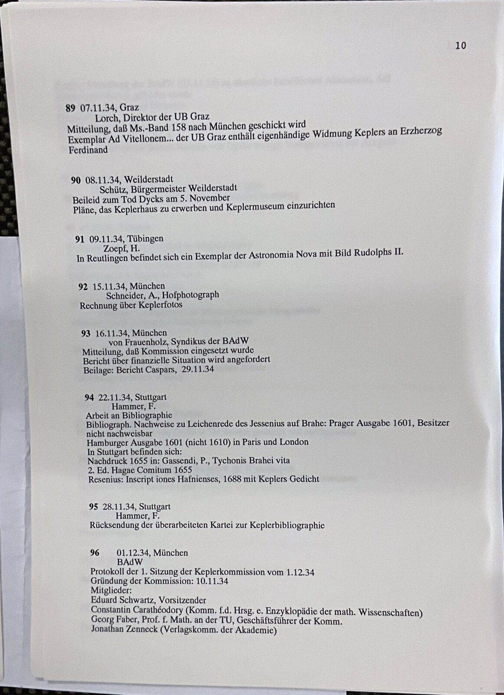
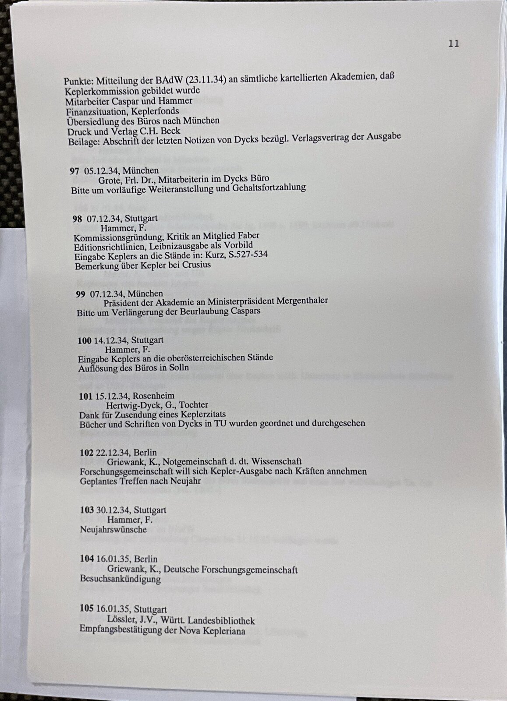
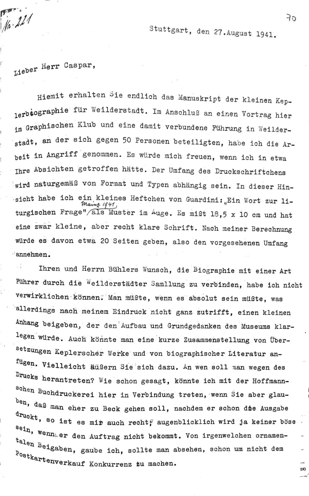
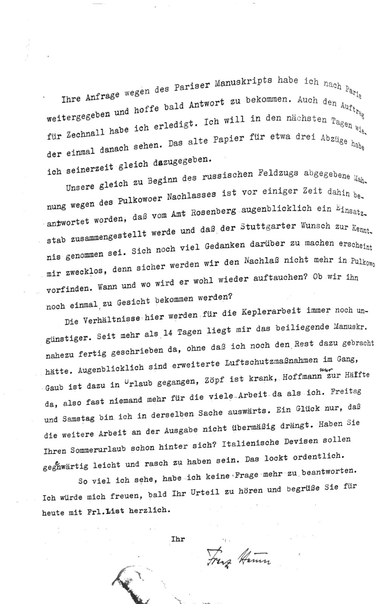
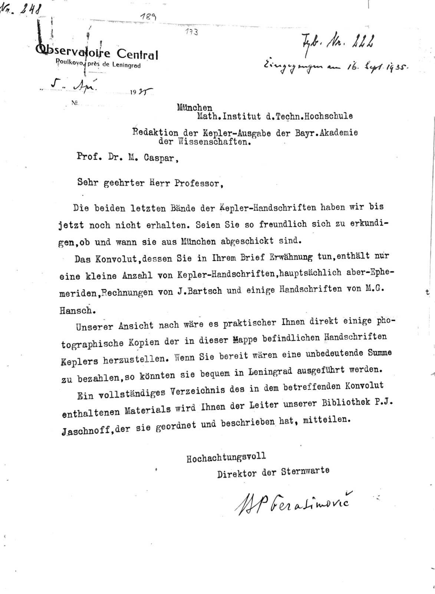
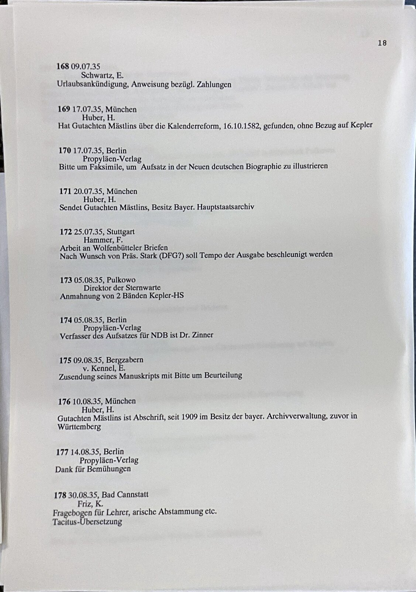

Die Geschichte der Kepler-Kommission
Keplers Nachlass, Pulkowo und die Gesammelten Werke. Mit einer Faksimile-Edition der Münchner Kepleriana (1927–1941)
![]()
The Kepler-Kommission of the Bavarian Academy of Sciences was constituted in November 1934 to edit Johannes Kepler’s collected works, the Kepler Gesammelte Werke (22 volumes in 26, 1937–2017). This paper tells the history of the commission from the fate of Kepler’s manuscripts after 1630, through their purchase for St. Petersburg in 1774 and their custody at the Pulkovo observatory, to Walther von Dyck’s photographic campaign of 1928–1934, the founding of the commission and the completion of the edition. It compares the Petersburg side of this history with that of Euler’s Opera omnia and follows the manuscripts dispersed over some 80 repositories. Part four is a facsimile edition of eight documents photographed in Munich on 14 March 2024: registers of the commission’s correspondence, letters of 1928–1941, photostats of Kepler manuscripts, and reproductions of two letters of Kepler of 1630 whose originals are in Philadelphia. The paper is at the same time a pilot of a PDAI publication: text, facsimiles, transcriptions and the checks behind every statement form one source that is published as an article, as an HTML edition and as a PDAI collection for further work on Kepler.
Johannes Kepler, Kepler-Kommission, Kepler Gesammelte Werke, Editionsgeschichte, Pulkowo, Euler Opera omnia, Faksimile-Edition, PDAI
Teil 1: Vorbemerkungen
Zielsetzung
Diese Publikation hat zwei Ziele. Sie erzählt die Geschichte der Kepler-Kommission der Bayerischen Akademie der Wissenschaften, die 1934 gebildet wurde, um die Werke Johannes Keplers zu edieren (Dok. 4, S. 7). Und sie ist ein Pilot: An acht Dokumenten zur Kepler-Kommission, die am 14. März 2024 in München photographiert wurden (Sammlung kepleriana-munich-2024), zeigt sie, wie eine künftige Publikation der Kepler Gesammelten Werke als AI Edition aussehen kann.
Unter einer Edition verstehen wir hier die kritische Herausgabe der Werke, Briefe und Handschriften eines Autors. Die Kepler Gesammelten Werke (KGW) sind eine solche Edition; ihre 22 Bände erschienen von 1937 bis 2017 (KGW 1, S. XII; KGW 22, S. 535 und Impressum). Eine AI Edition nennen wir eine Edition, deren Texte, Faksimiles und Prüfungen als PDAI-Sammlung vorliegen und mit Famulus-Notebooks befragt werden können. PDAI ist das Format, in dem jede Seite einer Quelle als Bild und als Transkription nach einer festen Grammatik (einer DTD) gespeichert ist; eine Transkription ist die diplomatische Wiedergabe des Wortlauts einer Seite, ein Faksimile ihre photographische Wiedergabe.
Eine Quelle, drei Formen
Die Publikation liegt in drei Formen vor, die aus derselben Quelle entstehen:
- als Aufsatz in deutscher Sprache, gerendert als HTML und als PDF;
- als Faksimile-Edition der acht Münchner Dokumente (Teil 4), in der jede Seite neben ihrer Transkription steht;
- als eigenständige PDAI-Sammlung
kepleriana-munich-2024, die weitere Arbeiten zu Kepler und zur Kepler-Kommission als Quelle nutzen können.
Jede Zahl und jedes Datum im Text trägt einen Beleg: den Band und die Seite der KGW, das Dokument und die Seite der Münchner Kepleriana (zitiert als „Dok. 1, S. 11“, aufgelöst im Anhang) oder die Literatur mit Seite. Wo ein Beleg fehlt, steht eine markierte Lücke. Die Zahlen, die aus den Sammlungen gelesen werden, erzeugt ein Block des Notebooks; sein Ergebnis ist im Text genannt und im Notebook nachzuprüfen.
Die Münchner Kepleriana
Die acht Dokumente umfassen 102 Photographien (Block unten). Sie enthalten maschinenschriftliche Register der Korrespondenz Walther von Dycks und Max Caspars von 1927 bis 1935, Briefe der Jahre 1928 bis 1941, Photostats von Kepler-Handschriften, Drucke und Abschriften zu Kepler und Reproduktionen zweier Briefe Keplers vom Januar 1630. Abschnitt 3.3 beschreibt sie; Teil 4 ediert sie.
Die Transkription jeder Seite ist die Lesung von gemini-3.8-flash. „Am Faksimile geprüft“ heißt, dass eine Person die Seite am Bild kontrolliert hat; die übrigen Seiten tragen „maschinelle Lesung“. Wörtlich zitiert wird im Text nur, was am Faksimile geprüft ist.
Block kepleriana-umfang (bestanden; Version 3, 2026-09-27). Wie viele Seiten haben die Münchner Kepleriana, und welchen Prüfstand haben ihre Transkriptionen?
| Prüfstand | Seiten | Dokumente |
|---|---|---|
| maschinelle Lesung | 87 | 8 |
| am Faksimile geprüft | 15 | 5 |
Aufbau
Teil 2 erzählt die Geschichte der Kepler-Kommission: den Weg des Nachlasses von Keplers Tod bis Pulkowo (2.1), die Vorgeschichte der Edition (2.2), den Weg zur Gründung der Kommission (2.3) und die Edition bis zu ihrem letzten Band (2.4). Teil 3 vergleicht die Petersburger Seite dieser Geschichte mit der Euler-Edition (3.1), folgt der Zerstreuung der Handschriften (3.2), beschreibt die Münchner Kepleriana (3.3) und entwirft die Fortsetzung als AI Edition (3.4). Teil 4 ist die Faksimile-Edition.
Die Autoren und die Arbeitsweise
Die Publikation entsteht in einem Famulus-Notebook, an dem beide Autoren mit gleichen Rechten schreiben; jede Änderung ist mit ihrem Urheber verzeichnet. Die Transkriptionen von Teil 4 werden im Lektor geprüft; eine übernommene Korrektur schreibt die Seite der PDAI-Sammlung neu.
Teil 2: Die Geschichte der Kepler-Kommission
2.1 Vorgeschichte des Kepler-Nachlasses (1630–1928)
Die Kepler-Kommission wurde gebildet, um Handschriften zu edieren, die fast dreihundert Jahre lang den Besitzer wechselten, bevor sie in München photographiert werden konnten. Dieser Abschnitt folgt dem Nachlass von Keplers Tod bis zur Sternwarte Pulkowo. Seine Grundlage ist die Einleitung „Überlieferung und Verzeichnisse des Kepler-Nachlasses“ im Handschriftenkatalog der Kepler Gesammelten Werke (KGW 22, S. 519–525). Die Belegstellen aus diesem Band gibt der Block am Ende des Abschnitts wieder.
Sagan 1630
Kepler starb am 15. November 1630 in Regensburg (KGW 11,1, S. 499). Seine Papiere lagen in Sagan, wo er seit Ende Juli 1628 lebte und ein Jahresgehalt von 1000 Gulden aus Albrecht von Wallensteins Herrschaft Friedland bezog (KGW 19, S. 494). Der Handschriftenkatalog beschreibt den Bestand so: „Als Johannes Kepler 1630 starb, waren in seiner Hinterlassenschaft in Sagan Tausende von Inhalt und Ausarbeitung her unterschiedlichste Manuskriptseiten“ (KGW 22, S. 520). Kepler selbst nannte seinen Bestand an beschriebenen losen Blättern Bibliotheca chartacea (KGW 22, S. 520). Unter Nachlass verstehen wir im Folgenden die Gesamtheit dieser Handschriften einschließlich der Teile, die später von ihr getrennt wurden.
Zwei der Münchner Kepleriana (Teil 4) führen in diese letzten Monate: Sie enthalten Reproduktionen zweier Briefe, die Kepler im Januar 1630 aus Sagan an den Leipziger Mathematiker Philipp Müller schrieb (KGW 18, Nr. 1120 und 1122; Dok. 6–8, dazu Abschnitt 3.3).
Die Erben (1630–1663)
Die Tochter Susanna, verheiratet mit Keplers letztem Mitarbeiter Jakob Bartsch (1600–1633), stellte dem Leipziger Mathematiker Philipp Müller (1585–1659) die Frage, „was denn mit den nachgelassenen Schriften zu machen sei“ (KGW 22, S. 520). Die Handschriften kamen zunächst nach Lauban, später in die Obhut des Sohnes Ludwig Kepler (1607–1663). 1643 ermöglichte Kurfürst Friedrich Wilhelm von Brandenburg ihre Überführung nach Königsberg (KGW 22, S. 520 f.). In einem 2015 von Friedrich Seck entdeckten Einblattdruck riefen Rektor und Senat der Universität Königsberg 1645 dazu auf, die Veröffentlichung zu unterstützen (KGW 22, S. 521). Ludwig Kepler bot den Nachlass danach „für 8000 Reichstaler“ zum Verkauf an; Samuel Hartlib in London sollte dabei vermitteln (KGW 22, S. 521). Ein Käufer fand sich nicht.
Hevelius (1663–1687)
Nach Ludwig Keplers Tod 1663 erwarb der Danziger Astronom Johannes Hevelius (1611–1687) den Nachlass. Mit seinem Verzeichnis in den Philosophical Transactions von 1674 liegt die erste Beschreibung des Inhalts vor; die Einteilung in 29 Faszikel könnte teilweise auf Kepler selbst zurückgehen (KGW 22, S. 521). Hevelius plante, fünf Bände aus dem Nachlass zu publizieren (KGW 22, S. 521). Nach seinem Tod verwalteten seine Tochter und deren späterer Ehemann, der Danziger Ratsherr Hans Lange, die Sammlung und suchten Interessenten (KGW 22, S. 521). Dass die Handschriften den Brand der Danziger Sternwarte vom 26. September 1679 überstanden, berichtet die Sekundärliteratur zu Hevelius; die Stelle ist für diese Publikation noch am Wortlaut zu prüfen (Lücke).
Hansch und die Bindung von 1712
1707 erwarb der Leipziger Gelehrte Michael Gottlieb Hansch (1683–1749) den Nachlass „für 100 Gulden“ (KGW 22, S. 521). Er verteilte die 29 ungebundenen Faszikel auf 22 Bände und ließ sie 1712 in Pergament binden (KGW 22, S. 522). Diese 22 Bände heißen im Folgenden Nachlassbände. Kaiser Karl VI. gewährte Hansch einen Zuschuss von 4000 Gulden und eine Pension von 600 Gulden (KGW 22, S. 522). Im Juni 1718 überreichte Hansch dem Kaiser die Epistolae, einen Folioband mit 407 Briefen an und 77 Briefen von Kepler (KGW 22, S. 522). Die veröffentlichten Handschriften hatte er der Hofbibliothek zu überlassen; sie liegen heute in der Österreichischen Nationalbibliothek als Cod. 10702, 10703 und 10704 (KGW 22, S. 522). 1721 musste Hansch die verbliebenen 18 Bände in Frankfurt am Main versetzen (KGW 22, S. 522).
Murr, Euler und der Ankauf für St. Petersburg (1760–1774)
Christoph Gottlieb von Murr (1733–1811) wurde um 1760 auf die verpfändeten, „für 1500 Gulden“ zum Verkauf stehenden Manuskripte aufmerksam; ohne ihn wäre nach dem Urteil des Katalogs „vielleicht der gesamte Kepler-Nachlaß auf einem Speicher in Vergessenheit geraten“ (KGW 22, S. 523). 1773 gelang es Murr, die St. Petersburger Akademie für den Erwerb zu interessieren (KGW 22, S. 523). „Der Mathematiker Leonhard Euler (1707–1783) erstellte schließlich das entscheidende, aber keineswegs so vorteilhafte Gutachten, das den Kauf durch Katharina II. einleitete“ (KGW 22, S. 523). Im Juni 1774 kamen die 18 Bände in St. Petersburg an und wurden „als Schenkung der Zarin“ dem Archiv der Akademie überlassen; Wolfgang Ludwig Krafft und Anders Johan Lexell erhielten den Auftrag, Manuskripte zur Veröffentlichung auszuwählen (KGW 22, S. 523).
Pulkowo und die erste Edition (1839–1871)
1839 wurden die Handschriften der neu gegründeten Sternwarte Pulkowo bei St. Petersburg übergeben (KGW 22, S. 524). Ab 1850 kam unter Otto Wilhelm Struve durch Vermittlung der russischen Gesandten am württembergischen Hof die Ausleihe zustande, auf der die erste Edition der Werke Keplers beruht, die Opera omnia von Christian (von) Frisch (1807–1881) (KGW 22, S. 524). Aus Frischs Verweisen auf die „Mss. Pulkova“ stammt der Name Pulkowoer Handschriften (KGW 22, S. 524). Schon vor Frisch hatte die Großherzogin Maria Pawlowna von Sachsen-Weimar-Eisenach (1786–1859) die Ausleihe eines Nachlassbandes nach Weimar und Jena ermöglicht, den Ernst Friedrich Apelt (1812–1859) für den Briefwechsel mit David Fabricius bearbeitete; derselbe Band ging später an den ostfriesischen Oberlehrer Bunte (KGW 22, S. 524).
Die Geschichte der Sternwarte Pulkowo selbst — Gründung unter Friedrich Georg Wilhelm Struve, Ausbau, Zerstörung im Zweiten Weltkrieg — ist für diese Publikation noch aus der Literatur zu erarbeiten; der Handschriftenkatalog nennt die Sternwarte nur als Verwahrort (Lücke).
Belegstellen
Der Block liest die zitierten Sätze der Einleitung von KGW 22 aus der Sammlung kepler-prim (Block unten). Die Seitenzahl ist die gedruckte Seite; der Index der Sammlung liegt in diesem Teil des Bandes um eins darunter.
Block kgw22-belegstellen (bestanden; Version 1, 2026-09-27). Die Sätze der Einleitung zum Handschriftenkatalog (KGW 22, S. 520–524), auf denen die Daten und Zahlen dieses Abschnitts beruhen.
- kgw-22 · 520 · 0: „Als Johannes Kepler 1630 starb , waren in seiner Hinterlassenschaft in Sagan Tausende von Inhalt und Ausarbeitung her unterschiedlichste Manuskriptseiten .“
- kgw-22 · 520 · 2: „Kepler selbst prägt die Bezeichnung Bibliotheca chartacea 2 in Bezug auf seinen Bestand an beschriebenen losen Blättern , der neben Vorarbeiten zu Veröffentlichungen bis hin zu Druckvorlagen auch Exzerpte , Beobachtungsdaten , Horoskope , Rechnungen und Notizen enthält .“
- kgw-22 · 521 · 10: „Der in England lebende und mit zahlreichen Gelehrten in Verbindung stehende Hartlib sollte bei der Veräußerung des Nachlasses behilflich sein , den Ludwig Kepler nunmehr für 8000 Reichstaler zu dem Verkauf anbot .“
- kgw-22 · 521 · 15: „Die Einteilung in 29 Faszikel könnte zumindest teilweise von Kepler selbst vorgenommen worden sein : Faszikelbezeichnungen auf einzelnen Manuskriptseiten stimmen allerdings nicht mit der veröffentlichten Faszikel - Nummer überein .“
- kgw-22 · 521 · 30: „12 Es ist Hansch , der 1707 für 100 Gulden die Hinterlassenschaft erwirbt und“
- kgw-22 · 522 · 1: „Durch seine Neuordnung wurden die 29 ungebundenen Faszikel auf 22 Bände von unterschiedlichem Umfang und Format verteilt und 1712 in dem Stil der Zeit in Pergament gebunden .“
- kgw-22 · 522 · 10: „einen Zuschuß von 4000 Gulden sowie eine Pension von 600 Gulden .“
- kgw-22 · 522 · 11: „In dem Juni 1718 kann Hansch die „ Epistolae “ , ein stattliches Buch in Folioformat 15 mit 407 Briefen an und 77 Briefen von Kepler , dem Kaiser überreichen .“
- kgw-22 · 523 · 0: „Wäre nicht der Nürnberger Gelehrte Christoph Gottlieb von Murr ( 1733–1811 ) um 1760 auf die verpfändeten und für 1500 Gulden zu dem Verkauf stehenden Manuskripte aufmerksam geworden , wäre vielleicht der gesamte Kepler - Nachlaß auf einem Speicher in Vergessenheit geraten .“
- kgw-22 · 523 · 10: „Nach mehr als einem Jahrzehnt der Bemühungen gelang es Murr , 1773 die St. Petersburger Akademie für den Erwerb zu interessieren .“
- kgw-22 · 523 · 12: „21 Der Mathematiker Leonhard Euler ( 1707–1783 ) erstellte schließlich das entscheidende , aber keineswegs so vorteilhafte Gutachten , das den Kauf durch Katharina II .“
- kgw-22 · 523 · 14: „22 In dem Juni des Folgejahres kamen die 18 Bände und mit Sicherheit ein Teil des oben beschriebenen Koffer - und Kisten - Inhalts 23 in St. Petersburg an und wurden als Schenkung der Zarin dem Archiv der Akademie der Wissenschaften 24 überlassen .“
- kgw-22 · 524 · 0: „1839 wurden die Kepleriana zu der Verwahrung der neugegründeten Sternwarte Pulkowo unweit von St. Petersburg übergeben , die sich unter den Astronomen Struve 26 zu einer der angesehensten Institutionen ihrer Zeit entwickelte .“
- kgw-22 · 524 · 1: „Mit Otto Wilhelm Struve kam ab 1850 durch Vermittlung der russischen Gesandten an dem Württembergischen Hof in Stuttgart schließlich die Ausleihe der Handschriften zustande , auf denen die erste Gesamtausgabe der Werke Keplers von Christian ( von ) Frisch ( 1807–1881 ) basiert .“
- kgw-22 · 524 · 5: „Pulkova “ 28 hat sich bis heute in der Kepler - Forschung und - Literatur der Begriff der Pulkower Handschriften erhalten , und bis in die Gegenwart wird der ursprünglich 22bändigen Zählung der Vorzug gegeben .“
- kgw-22 · 524 · 6: „Noch vor der Benutzung durch Frisch hatte die Fürsprache der Großherzogin von Sachsen - Weimar - Eisenach Maria Pawlowna ( 1786–1859 ) , Zarentochter und Enkelin Katharinas II . ,“
Das Urteil besteht, wenn alle sechzehn Belegsätze gefunden werden.
2.2 Vorgeschichte der Edition (1858–1928)
Die Kepler Gesammelten Werke (KGW) sind die zweite Edition der Werke Keplers. Die erste gab Christian Frisch heraus; die zweite plante Walther von Dyck. Ihre Vorgeschichte hat Max Caspar selbst in der Einleitung zum ersten Band der KGW dargestellt (KGW 1, S. VII–XII). Dieser Abschnitt folgt ihr und nennt, wo sie von anderen Quellen abweicht.
Frischs Opera omnia (1858–1871)
Frisch stützte seine Edition auf die Pulkowoer Handschriften, die ab 1850 durch Vermittlung der russischen Gesandten am württembergischen Hof nach Stuttgart ausgeliehen wurden (KGW 22, S. 524). Die Edition erschien „in acht Bänden … 1858–71“ (KGW 1, S. VII). Caspar erkennt sie als Grundlage der späteren Arbeit an und nennt zugleich „inhaltliche und formelle Mängel“ (KGW 1, S. VIII). Für den Briefwechsel wird er genauer: Frisch habe die Briefe an Kepler „nur auszugsweise“ wiedergegeben und die Briefe Keplers „zumeist auseinandergerissen“, um sie in seinen Einleitungen unterzubringen (KGW 1, S. XI). Daraus leitet Caspar das Ziel der neuen Edition ab: „zum erstenmal eine möglichst lückenlose chronologische Darstellung des ungemein reichen Briefmaterials“ (KGW 1, S. XI).
Walther von Dyck: Nova Kepleriana und der Bericht von 1914
Nach Caspar reifte der Plan einer neuen Edition in Walther von Dyck, Professor an der Technischen Hochschule München (KGW 1, S. VIII). Dyck veröffentlichte ab 1910 in den Abhandlungen der Bayerischen Akademie der Wissenschaften aufgefundene Stücke unter dem Titel „Nova Kepleriana“ und legte im Mai 1914 auf der Wiener Tagung des Verbands deutscher wissenschaftlicher Körperschaften einen Bericht „über die Frage einer etwaigen Neuausgabe der Werke von Johannes Kepler“ vor, in dem er auf Schriften hinwies, „die Frisch entgangen waren“ (KGW 1, S. VIII). Der Erste Weltkrieg und die Nachkriegszeit unterbrachen diese Arbeit (KGW 1, S. VIII).
Die biographische Literatur zu Dyck setzt den Beginn seiner Vorbereitungen an der Akademie auf 1906; diese Angabe ist für die vorliegende Publikation noch an Hashagens Dyck-Biographie zu prüfen (Lücke). Belegt sind durch Caspar die Jahre 1910 und 1914.
Dycks Sammlung von Photokopien
1926 schloss sich Caspar, der Hauptwerke Keplers ins Deutsche übersetzt hatte, mit Dyck „zu gemeinsamer Arbeit“ zusammen (KGW 1, S. VIII). Dyck legte eine „Sammlung von Fotokopien aller Keplerhandschriften an, die er erreichen konnte“: den Nachlass aus Pulkowo und Handschriften „hauptsächlich aus München, Stuttgart, Tübingen, Wien, Graz, Wolfenbüttel, Paris, Oxford“, zusammen „über 12000 Blätter“ (KGW 1, S. IX). Die Mittel stellten die Deutsche Forschungsgemeinschaft und „rheinische Industriekreise“ zur Verfügung (KGW 1, S. IX). Der Handschriftenkatalog datiert die Reproduktion der Nachlassbände auf 1928–1934 und nennt sie „eine unentbehrliche Arbeitsgrundlage“ der Edition (KGW 22, S. 524).
Wie die Reproduktionen aus Pulkowo nach München kamen, zeigen die Münchner Kepleriana; davon handelt Abschnitt 2.3.
Block kgw1-einleitung (bestanden; Version 1, 2026-09-27). Die Sätze aus Caspars Einleitung zu KGW 1 (S. VII–XII) über Frischs Edition, Dycks Bericht von 1914, die Nova Kepleriana, Dycks Photokopien und den Beginn der Edition 1937. Der Index pidx 5–10 entspricht den Seiten VII–XII; die Seite X ist im Korpus nicht erfasst.
- kgw-01 · 5 · 13: „In acht Bänden gelangte diese Ausgabe 1858–71 zu der Veröffentlichung .“
- kgw-01 · 6 · 6: „Bereits in dem Mai 1914 hat er auf der Wiener Tagung des Verbands deutscher wissenschaftlicher Körperschaften einen Bericht über die Frage einer etwaigen Neuausgabe der Werke von Johannes Kepler vorgelegt , in dem er auf eine Reihe von Schriften Keplers hinweisen konnte , die er wieder aufgefunden hatte und die Frisch entgangen waren .“
- kgw-01 · 6 · 8: „Zu der Vorbereitung der neuen Ausgabe stellte er jahrelang in zahlreichen Bibliotheken und Archiven planmäßige Nachforschungen an und begann das aufgefundene Material in einer Schriftenreihe „ Nova Kepleriana ” schon von dem Jahre 1910 an in den Abhandlungen der Bayerischen Akademie der Wissenschaften zu veröffentlichen .“
- kgw-01 · 7 · 3: „Die ganze Sammlung umfaßt über 12000 Blätter .“
- kgw-01 · 10 · 2: „B ereits in dem Herbst 1937 ist die neue Ausgabe mit der Veröffentlichung des III .“
2.3 Der Weg zur Kommissionsgründung (1927–1935)
Den Weg zur Kepler-Kommission dokumentiert ein Register, das in den Münchner Kepleriana liegt. Sein Kopf lautet „KORRESPONDENZEINGÄNGE 1927–1934 (W.v. Dyck, M. Caspar) 1935 (M. Caspar, Kepler-Kommission)“ (Dok. 1, S. 12). Ein Register nennen wir diese maschinenschriftliche, laufend nummerierte Liste der eingegangenen Briefe; jeder Eintrag verzeichnet Nummer, Datum, Ort, Absender und eine Inhaltsangabe, das Regest. Das Register reicht von Eintrag 1 (10.08.1927) bis Eintrag 213 (31.12.1935); die Nummer 129 fehlt im Typoskript (Dok. 1, S. 12–16; Dok. 4, S. 1–19). Wer das Register anlegte, ist offen (Abschnitt 3.3). Die Transkriptionen der Registerseiten beruhen auf zwei übereinstimmenden Lesungen.
Die Reproduktion der Pulkowoer Handschriften (1928–1932)
Am 1. März 1928 schrieb Walther von Dyck an Max Caspar in Rottweil, „heute endlich“ sei die Antwort aus Pulkowo eingetroffen, „gemäß welcher das Astronomen-Kollegium der Sternwarte zugestimmt hat, daß jeweils 2 Bände der Kepler-Manuscripte an die Münchener Staatsbibliothek auf diplomatischem Weg gesendet werden zum Zwecke ihrer Reproduktion“ (Dok. 1, S. 11). Er werde „sofort nach Eintreffen der ersten Bände (IX und X)“ die Kopien herstellen und kontrollieren (ebd.). Das Register verzeichnet denselben Brief als Eintrag 2 (Dok. 1, S. 12).
Die Einträge der folgenden Jahre zeigen, woher Dyck und Caspar ihr Material bezogen. Dyck meldete Kepler-Briefe in Wolfenbüttel (Eintrag 24, 23.10.1931), ließ die Kepler-Handschriften der Codices 1607 und 1608 der Universitätsbibliothek München photographieren (Eintrag 36, 17.11.1932) und schickte am 22.11.1932 eine „Genaue Aufstellung der photographischen Reproduktionen der Kepler-Briefe (an Herwart) aus UB und StaBi München“ (Eintrag 37; Dok. 1, S. 15–16). Dieser Brief liegt als eigenhändiges Schreiben Dycks auf dem Briefkopf des Mathematischen Instituts der Technischen Hochschule München in den Kepleriana (Dok. 3, S. 1–2); seine Transkription ist noch ungeprüft. Zugleich erreichten Caspar Anfragen und Hinweise von Bibliotheken, Lehrern und Lesern: Der Oberbürgermeister von Sagan teilte mit, dass sich dort keine Kepler-Handschriften befänden (Eintrag 29, 15.01.1932), ein Mainzer Leser rechnete sich „laut Familienüberlieferung der Kepler-Verwandtschaft“ zu (Eintrag 30, 25.01.1932).
Die Finanzierung und die Beurlaubungen (1933–1934)
Am 14.12.1933 bereitete Dyck „eine Schrift über die Kepler-Ausgabe an die Notgemeinschaft“ vor; mit demselben Eintrag beginnt „die Korrespondenz mit Franz Hammer“ (Eintrag 48; Dok. 4, S. 2). Schmidt-Ott unterstützte den Antrag auf Geldbewilligung der Notgemeinschaft (Eintrag 50, 19.01.1934). Am 07.02.1934 meldete Dyck: „Geld (40.000 M) ist bewilligt und auf Keplerfonds eingezahlt“ (Eintrag 51; Dok. 4, S. 2). Das württembergische Kultministerium teilte mit, dass Ministerpräsident Mergenthaler sich für die Pläne Caspars einsetzen werde (Eintrag 52, 21.02.1934); das Staatsministerium beschloss am 6.4.1934, Caspar für ein Jahr zu beurlauben (Eintrag 58; Dok. 4, S. 4). Caspar selbst berichtet, er habe den Plan im Sommer 1933 Mergenthaler vorgetragen und könne sich seit dem Frühjahr 1934 ganz der Arbeit an Kepler widmen (KGW 1, S. IX).
Franz Hammer fragte, ob er Beurlaubung beantragen solle, „um an Keplerausgabe mitzuwirken“ (Eintrag 62). Das Datum dieses Eintrags lautet im Typoskript „12.06.32“; es unterbricht die Folge der Einträge vom Mai und Juni 1934 und ist als unsicher markiert (Dok. 4, S. 4). Das Ministerium lehnte Hammers Beurlaubung ab (Eintrag 68, 13.07.1934) und entschied am 07.10.1934, Hammer dürfe „wöchentlich 15 Dienststunden für Keplerarbeit verwenden“ (Eintrag 79; Dok. 4, S. 6). Hammer brachte von Anfang an Fragen der Edition ein: die „Form der Edition (Schreibweise, Interpunktion)“ mit der „Crusius-Ausgabe als Orientierung“ (Eintrag 65, 29.06.1934) und Vorschläge für eine „Fragebogenaktion an Bibliotheken“ (Eintrag 76, 19.09.1934). Die Beck’sche Buchdruckerei in Nördlingen schickte Schriftproben und ein Preisangebot (Eintrag 74, 14.08.1934).
Die Gründung (November und Dezember 1934)
Am 05.11.1934 schlug der Präsident der Bayerischen Akademie der Wissenschaften, L. Wenger, „die Einsetzung einer Kommission vor, die in der nächsten Klassensitzung gebildet werden soll“ (Eintrag 88; Dok. 4, S. 6). Am selben Tag starb Walther von Dyck; der Bürgermeister von Weil der Stadt verband sein Beileid „zum Tod Dycks am 5. November“ mit dem Plan, „das Keplerhaus zu erwerben und Keplermuseum einzurichten“ (Eintrag 90; Dok. 4, S. 7). Der Syndikus der Akademie teilte am 16.11.1934 mit, dass die Kommission eingesetzt sei, und forderte einen Bericht über die finanzielle Lage an (Eintrag 93).
Eintrag 96 verzeichnet das „Protokoll der 1. Sitzung der Keplerkommission vom 1.12.34“. Es nennt als Datum der Gründung den 10.11.1934 und als Mitglieder „Eduard Schwartz, Vorsitzender“, Constantin Carathéodory, Georg Faber als Geschäftsführer der Kommission und Jonathan Zenneck (Dok. 4, S. 7). Die Fortsetzung des Eintrags hält die Punkte der Sitzung fest: die „Mitteilung der BAdW (23.11.34) an sämtliche kartellierten Akademien, daß Keplerkommission gebildet wurde“, die Mitarbeiter Caspar und Hammer, die Finanzlage und den Keplerfonds, die Übersiedlung des Büros nach München und „Druck und Verlag C.H. Beck“ (Dok. 4, S. 8).
In den folgenden Wochen wurde Dycks Arbeitsstelle aufgelöst: Seine Mitarbeiterin Dr. Grote bat um Weiteranstellung (Eintrag 97, 05.12.1934), Hammer meldete die „Auflösung des Büros in Solln“ (Eintrag 100, 14.12.1934), und am 21.01.1935 befand sich das Büro in München; fünf Kisten Photokopien gingen nach Stuttgart (Eintrag 107; Dok. 4, S. 9). Am 07.12.1934 schrieb Hammer über die Kommissionsgründung, übte „Kritik an Mitglied Faber“ und nannte die „Leibnizausgabe als Vorbild“ für Editionsrichtlinien (Eintrag 98; Dok. 4, S. 8). Karl Griewank teilte für die Notgemeinschaft mit, die Forschungsgemeinschaft wolle „sich Kepler-Ausgabe nach Kräften annehmen“ (Eintrag 102, 22.12.1934).
Das erste Jahr der Kommission (1935)
Caspars Beurlaubung wurde bis zum 31.10.1935 verlängert (Eintrag 114). Wenger kündigte am 25.03.1935 an, „Schwierigkeiten mit Kommissionsmitgliedern sollen belegt werden“ (Eintrag 138), und gab am 11.04.1935 den Vorsitz an Geheimrat Schwartz ab (Eintrag 143; Dok. 4, S. 12). Hammer meldete am 06.06.1935, die „Inventarisierung des handschriftlichen Nachlasses ist beendet“ und Schwartz habe sich „für Übernahme der Editionsrichtlinien der Leibniz-Ausgabe ausgesprochen“ (Eintrag 159; Dok. 4, S. 14).
Die Pulkowoer Handschriften blieben Gegenstand der Korrespondenz. Am 05.08.1935 mahnte der Direktor der Sternwarte Pulkowo „2 Bände Kepler-HS“ an (Eintrag 173; Dok. 4, S. 15). Der Bibliothekar P. Jaschnoff schrieb am 19.09.1935, in der Bibliothek lägen sechs Briefe Dycks an den Direktor O. Baklund aus dem Jahr 1913, und beschrieb eine „Mappe Kepleriana“ (Eintrag 180); am 18.10.1935 bestätigte er den Erhalt der Bände XXI und XXII (Eintrag 191; Dok. 4, S. 17). Den Rückweg der Bände über die Staatsbibliothek belegt Caspars Ausgangskorrespondenz (Dok. 2; Abschnitt 2.4). Hammer zog am 24.12.1935 eine Bilanz des Jahres: „mäßiger Erfolg, liegt z.T. an übergeordneten Instanzen“ (Eintrag 212; Dok. 4, S. 19).
Die Zusammensetzung der Kommission bei Erscheinen von KGW 1 nennt Caspar: unter dem Vorsitz von Eduard Schwartz der Präsident der Deutschen Forschungsgemeinschaft sowie Ludwig Bieberbach, Constantin Carathéodory, Max Caspar, Karl Griewank, Franz Hammer und Hans Ludendorff (KGW 1, S. IX).
Blöcke
Block register-absender-1933-1935 (bestanden; Version 3, 2026-09-27). Wer schrieb zwischen Dezember 1933 und Dezember 1935 am häufigsten an die Kepler-Arbeitsstelle? Gezählt sind die verschiedenen Registernummern je Absender (mindestens drei Einträge).
| Absender | Einträge | erster Eintrag | letzter Eintrag |
|---|---|---|---|
| Hammer, F. | 25 | 1934-06-12 | 1935-12-24 |
| Dyck, W.v. | 6 | 1933-12-14 | 1934-03-18 |
| BAdW | 5 | 1934-12-01 | 1935-11-19 |
| Huber, H. | 5 | 1935-07-06 | 1935-10-14 |
| Zoepf, H. | 4 | 1934-07-14 | 1935-03-21 |
| Deutsche Forschungsgemeinschaft | 3 | 1935-02-23 | 1935-10-26 |
| Friz, K. | 3 | 1935-08-30 | 1935-10-30 |
| Propyläen-Verlag | 3 | 1935-07-17 | 1935-08-14 |
| Wenger, L., Präsident der BAdW | 3 | 1934-11-05 | 1935-04-11 |
Block register-pulkowo (bestanden; Version 2, 2026-09-27). Welche Registereinträge betreffen Pulkowo und die Pulkowoer Handschriften?
| Nr. | Datum | Ort | Absender | Regest |
|---|---|---|---|---|
| 2 | 01.03.1928 | München | Dyck, W.v. | Sternwarte Pulkowo hat der Reproduktion der Kepler-Mss. zugestimmt Erste Bogen der Astronomia Nova erhalten |
| 132 | 03.03.35 | Stuttgart | Hammer, F. | Korrekturbogen der Bibliographie Kalender auf 1603, Großteil in HS Pulkowo |
| 173 | 05.08.35 | Pulkowo | Direktor der Sternwarte | Anmahnung von 2 Bänden Kepler-HS |
| 180 | 19.09.35 | Pulkowo | Jaschnoff, P., Bibliothekar | 6 Briefe v. Dycks an Direktor O. Baklund aus dem Jahr 1913 sind in Bibliothek Pulkowo. Inhaltsverzeichnis der Sammlung wurde von Baklund gesandt Ausführliche Beschreibung einer Mappe Kepleriana von Jaschnoff |
| 181 | 19.09.35 | Pulkowo | Jaschnoff, P. | Hinweis auf Druckfehler bei Struve: Richtiger Titel: De Solis Deliquio …. mense Octobri contigit |
| 191 | 18.10.35 | Pulkowo | Jaschnoff, P. | Sendet Beschreibung der Handschriften Bestätigt Erhalt der Mss.-Bde. XXI und XXII |
| 193 | 23.10.35 | Stuttgart | Hammer, F. | Unstimmigkeiten bei Pulkowoer-Mss. Die in N.K. 4 veröffentlichten Briefe lassen sich nicht feststellen Beschäftigung mit Fabricius-Briefen |
Block faksimile-gruendungsprotokoll (bestanden; Version 3, 2026-09-27). Die Registerseiten mit dem Protokoll der ersten Sitzung der Kepler-Kommission vom 1. Dezember 1934 (Einträge 89–105), Faksimile neben Transkription.

Dok. 4, S. 7 · maschinelle Lesung
89 07.11.34, Graz Lorch, Direktor der UB Graz Mitteilung, daß Ms.-Band 158 nach München geschickt wird Exemplar Ad Vitellonem… der UB Graz enthält eigenhändige Widmung Keplers an Erzherzog Ferdinand 90 08.11.34, Weilderstadt Schütz, Bürgermeister Weilderstadt Beileid zum Tod Dycks am 5. November Pläne, das Keplerhaus zu erwerben und Keplermuseum einzurichten 91 09.11.34, Tübingen Zoepf, H. In Reutlingen befindet sich ein Exemplar der Astronomia Nova mit Bild Rudolphs II. 92 15.11.34, München Schneider, A., Hofphotograph Rechnung über Keplerfotos 93 16.11.34, München von Frauenholz, Syndikus der BAdW Mitteilung, daß Kommission eingesetzt wurde Bericht über finanzielle Situation wird angefordert Beilage: Bericht Caspars, 29.11.34 94 22.11.34, Stuttgart Hammer, F. Arbeit an Bibliographie Bibliograph. Nachweise zu Leichenrede des Jessenius auf Brahe: Prager Ausgabe 1601, Besitzer nicht nachweisbar Hamburger Ausgabe 1601 (nicht 1610) in Paris und London In Stuttgart befinden sich: Nachdruck 1655 in: Gassendi, P., Tychonis Brahei vita 2. Ed. Hagae Comitum 1655 Resenius: Inscript iones Hafnienses, 1688 mit Keplers Gedicht 95 28.11.34, Stuttgart Hammer, F. Rücksendung der überarbeiteten Kartei zur Keplerbibliographie 96 01.12.34, München BAdW Protokoll der 1. Sitzung der Keplerkommission vom 1.12.34 Gründung der Kommission: 10.11.34 Mitglieder: Eduard Schwartz, Vorsitzender Constantin Carathéodory (Komm. f.d. Hrsg. e. Enzyklopädie der math. Wissenschaften) Georg Faber, Prof. f. Math. an der TU, Geschäftsführer der Komm. Jonathan Zenneck (Verlagskomm. der Akademie)

Dok. 4, S. 8 · maschinelle Lesung
Punkte: Mitteilung der BAdW (23.11.34) an sämtliche kartellierten Akademien, daß Keplerkommission gebildet wurde Mitarbeiter Caspar und Hammer Finanzsituation, Keplerfonds Übersiedlung des Büros nach München Druck und Verlag C.H. Beck Beilage: Abschrift der letzten Notizen von Dycks bezügl. Verlagsvertrag der Ausgabe 97 05.12.34, München Grote, Frl. Dr., Mitarbeiterin im Dycks Büro Bitte um vorläufige Weiteranstellung und Gehaltsfortzahlung 98 07.12.34, Stuttgart Hammer, F. Kommissionsgründung, Kritik an Mitglied Faber Editionsrichtlinien, Leibnizausgabe als Vorbild Eingabe Keplers an die Stände in: Kurz, S.527-534 Bemerkung über Kepler bei Crusius 99 07.12.34, München Präsident der Akademie Ministerpräsident Mergenthaler Bitte um Verlängerung der Beurlaubung Caspars 100 14.12.34, Stuttgart Hammer, F. Eingabe Keplers an die oberösterreichischen Stände Auflösung des Büros in Solln 101 15.12.34, Rosenheim Hertwig-Dyck, G., Tochter Dank für Zusendung eines Keplerzitats Bücher und Schriften von Dycks in TU wurden geordnet und durchgesehen 102 22.12.34, Berlin Griewank, K., Notgemeinschaft d. dt. Wissenschaft Forschungsgemeinschaft will sich Kepler-Ausgabe nach Kräften annehmen Geplantes Treffen nach Neujahr 103 30.12.34, Stuttgart Hammer, F. Neujahrswünsche 104 16.01.35, Berlin Griewank, K., Deutsche Forschungsgemeinschaft Besuchsankündigung 105 16.01.35, Stuttgart Löffler, K., Württ. Landesbibliothek Empfangsbestätigung der Nova Kepleriana
2.4 Die Edition bis 2017
Die Kepler Gesammelten Werke erschienen von 1937 an in München; das Siglenverzeichnis des letzten Bandes zitiert sie als „Bd. 1–22, München 1937ff.“ (KGW 22, S. 535). Dieser Abschnitt verfolgt die Edition von der Rückgabe der Pulkowoer Handschriften 1935 bis zum Erscheinen von KGW 22 im Jahr 2017. Er stützt sich auf drei Arten von Belegen: die Titelblätter und Impressen der KGW-Bände, die Rückblicke in KGW 20,1 und KGW 22 und die Briefe der Jahre 1935 und 1941 in den Münchner Kepleriana (Dok. 2).
Die Pulkowoer Bände nach der Gründung (1935–1937)
Am 27. Juni 1935 schrieb Max Caspar unter dem Kopf „Kepler-Ausgabe der Bay. Akademie der Wissenschaften“ aus dem Mathematischen Institut der Technischen Hochschule München an „Herrn Geheimrat“; eine Notiz in roter Tinte nennt den Empfänger „Geh. Rat Schwartz“, also den Vorsitzenden der Kepler-Kommission. Das Blatt ist ein Durchschlag mit der Unterschrift „gez. Caspar“ und der Tagebuchnummer 183 (Dok. 2, S. 2). Caspar meldet: „Die beiden Pulkowoer Hss.-Bände habe ich bereits vor einigen Wochen der Verwaltung der Hss.-Abteilung in der Staatsbibliothek zurückgegeben mit der Bitte, sie nach Pulkowo zurückzuschicken.“ Der diplomatische Weg sei „freilich nicht der kürzeste“; man erwarte aus Pulkowo noch „das Konvolut, in dem sich noch weitere Kepler-Hss. befinden“, und die Akademie möge auf Bitten Ernst Zinners beantragen, die Handschriften des Regiomontanus mit diesem Konvolut zu schicken. Die Leihfrist von drei Monaten, die die Direktion der Sternwarte stellte, werde er einhalten (ebd.). Die Registereinträge desselben Jahres, die Mahnung aus Pulkowo und die Empfangsbestätigung für die Bände XXI und XXII, sind in Abschnitt 2.3 genannt.
Dycks Reproduktionen aus den Jahren 1928 bis 1934 bildeten nach dem Katalog der Kepler-Handschriften „eine unentbehrliche Arbeitsgrundlage für die Edition der Kepler-Gesamtausgabe“ (KGW 22, S. 524). Die Bände selbst verließen Pulkowo kurz darauf: „Im Juli 1937 wurde der Nachlaß auf Beschluß des Präsidiums der Akademien […] von Pulkowo zurück nach Leningrad in das Archiv der Akademie verlagert“ (KGW 22, S. 524). Als Grund nennt der Katalog vermutungsweise die Umstrukturierung der russischen Akademiearchive im Jahr 1936, „vielleicht auch aus Sicherheitsgründen“ (ebd.).
Die ersten Bände (1937–1960)
Die Edition begann nicht mit Band 1. Caspar schreibt in der Einleitung zu KGW 1: „Bereits im Herbst 1937 ist die neue Ausgabe mit der Veröffentlichung des III. Bandes begonnen worden“ (KGW 1, S. XII). Die Einleitung zu KGW 20,1 (1988, bearbeitet von Volker Bialas) blickt darauf zurück: Vor „rund fünfzig Jahre[n]“ habe mit der Neuausgabe der Astronomia Nova als Band 3 „die Edition der Gesammelten Werke von Johannes Kepler an der Bayerischen Akademie der Wissenschaften ihren Anfang“ genommen (KGW 20,1, S. 9). Unter der wissenschaftlichen Leitung Max Caspars (1880–1956), „assistiert von Martha List und unter Mitwirkung von Franz Hammer“ (1898–1969), sei die Edition so vorangeschritten, „daß bis 1960 der Großteil der Bände der Ausgabe vorlag“ (ebd.). In welchem Jahr die einzelnen Bände dieser ersten Reihe erschienen, geben die transkribierten Titelblätter der Bände 1 bis 10 und 13 bis 18 nicht an; die Jahre sind hier eine Lücke.
Die Titelblätter zeigen, wer die Bände verantwortete. Die Bände der ersten Reihe nennen als Herausgeber „im Auftrag der Deutschen Forschungsgemeinschaft und der Bayerischen Akademie der Wissenschaften unter der Leitung von Walther von Dyck† und Max Caspar“ (KGW 1, Titelblatt); bei KGW 14 und 15 tritt an die Stelle der Forschungsgemeinschaft die „Unterstützung des Bayerischen Staates“ (KGW 14 und 15, Titelblatt). Die Bandherausgeber sind Caspar (KGW 1, 3, 6, 7, 13, 14, 15, 17), Hammer (KGW 2, 5, 8, 9, 10), Caspar und Hammer gemeinsam (KGW 4) und Maximilian Heinz (KGW 16). Der Block kgw-titelblaetter liest diese Angaben aus den Titelblättern.
Die Kepler-Arbeit im Jahr 1941
Zwei Briefe des Jahres 1941 in den Münchner Kepleriana zeigen die Arbeitsstelle während des Krieges. Am 27. August 1941 schickte Franz Hammer aus Stuttgart das Manuskript einer „kleinen Keplerbiographie für Weilderstadt“ an Caspar (Dok. 2, S. 19–20, Nr. 221). Über den Nachlass schreibt er: „Unsere gleich zu Beginn des russischen Feldzugs abgegebene Mahnung wegen des Pulkowoer Nachlasses ist vor einiger Zeit dahin beantwortet worden, daß vom Amt Rosenberg augenblicklich ein Einsatzstab zusammengestellt werde und daß der Stuttgarter Wunsch zur Kenntnis genommen sei.“ Er rechne nicht damit, den Nachlass noch in Pulkowo vorzufinden, und fährt fort: „Die Verhältnisse hier werden für die Keplerarbeit immer noch ungünstiger“ (Dok. 2, S. 20). Der Katalog der Kepler-Handschriften bestätigt den Vorgang von der anderen Seite: Die Württembergische Landesbibliothek habe, „vermutlich auf Initiative Franz Hammers“, das Reichsministerium für die besetzten Ostgebiete auf eine Evakuierung der Kepler-Bände hingewiesen, und 1942 sei der Bibliothek berichtet worden, die Handschriften lägen im Leningrader Archiv (KGW 22, S. 525). Als Quelle dieses Berichts nennt der Katalog ein Schreiben des Einsatzstabs Reichsleiter Rosenberg an die Landesbibliothek vom 10.9.1942, „nach einer Briefabschrift der Kepler-Kommission München“ (KGW 22, S. 525, Anm. 32).
Am 26. Juli 1941 schrieb der Breslauer Philosoph Faust an Erich Schoenberg, den Direktor der Universitäts-Sternwarte Breslau, und bat um Rat für eine Gesamtausgabe der Werke des Copernicus zu dessen 400. Todestag 1943 (Dok. 2, S. 14). Als Vorbild nennt er die Kepler-Edition: „Dies Musterbeispiel ist die von Prof. Max Caspar (München-Solln, Albrecht-Dürer-Straße 28) veranstaltete große Kepler-Ausgabe, die mit Unterstützung des Württembergischen Kultministeriums und der Deutschen Forschungsgemeinschaft im Verlag Oscar Beck (München) erscheint“ (Dok. 2, S. 15). Caspar werde die Aufgabe kaum übernehmen können, „da nach dem Tode von Hammer die ganze Arbeit der Kepler-Ausgaben allein von Caspar getan werden muß“ (Dok. 2, S. 17). Diese Angabe trifft nicht zu: Hammer lebte bis 1969 (KGW 20,1, S. 9) und schrieb einen Monat später den eben zitierten Brief. Faust kündigt an, einen Durchschlag an Caspar zu schicken (Dok. 2, S. 18). Die zweite Seite des Briefes liegt in den Kepleriana zweimal vor (Dok. 2, S. 15 und 16).
Die Fortsetzung durch die Kepler-Kommission (1969–2017)
Nach 1960 „stagnierte die Arbeit; bedingt durch den Tod Caspars wie durch die verminderte Leistungsfähigkeit Hammers infolge einer schweren Kriegsverletzung, konnte nur noch die Herausgabe der bereits in Angriff genommenen Bände abgeschlossen werden“ (KGW 20,1, S. 9). „Inzwischen ist mit Band 11,1 die Edition von einer neuen Generation von Bearbeitern fortgesetzt worden“ (ebd.). Seit KGW 11,1 nennen die Titelblätter als Herausgeberin die Kepler-Kommission der Bayerischen Akademie der Wissenschaften; KGW 20,1 führt die Gründer und den Fortsetzer als „begründet von Walther von Dyck † und Max Caspar† fortgesetzt von Franz Hammer †“ (KGW 20,1, Titelblatt).
Die Bände dieser zweiten Reihe tragen ihr Jahr im Impressum: KGW 19 (1975, bearbeitet von Martha List und Wilhelm Otto), KGW 11,1 (1983, Volker Bialas), KGW 20,1 (1988, Bialas unter Mitwirkung von Friederike Boockmann), KGW 12 (1990, Jürgen Hübner, Helmuth Grössing, Friederike Boockmann, Friedrich Seck), KGW 11,2 (1993, Bialas und Grössing), KGW 20,2 (1998), KGW 21,1 (2002, Bialas, Boockmann, Eberhard Knobloch), KGW 21,2,1 (2009, Bialas und Seck), KGW 21,2,2 (2009, Boockmann und Daniel A. Di Liscia) und KGW 22 (2017, Peter Michael Schenkel; Handschriftenkatalog Hella Kothmann; chronologisches Register zu Band XIX Friedrich Seck). KGW 3 und KGW 7 erschienen 1990 und 1991 in zweiter, unveränderter Auflage (jeweils Titelblatt und Impressum).
Mit der Fortsetzung änderte die Kommission das Ziel der Edition. Die Einleitung zu KGW 20,1 begründet dies mit der Internationalisierung und Differenzierung der Kepler-Forschung seit der Mitte des 20. Jahrhunderts: Sie habe dazu geführt, „daß der ursprünglich beabsichtigte monumentale Charakter der Gesammelten Werke heute nicht mehr verfolgt wird. Nichts Endgültiges wird nunmehr angestrebt, nicht Vollendung gesucht; heute geht es vor allem darum, der wissenschafts- und kulturgeschichtlichen Forschung die Texte an die Hand zu geben“ (KGW 20,1, S. 9). Mit KGW 22 lag 2017 der letzte der 22 Bände vor (KGW 22, S. 535 und Impressum). An diese Zielsetzung, die Texte der Forschung an die Hand zu geben, knüpft der Ausblick in Abschnitt 3.4 an.
Blöcke
Block kgw-titelblaetter (bestanden; Version 3, 2026-09-27). Wer gab die einzelnen KGW-Bände heraus oder bearbeitete sie, und welches Jahr nennt das Impressum? Gelesen wird der Text der Titelblätter und Impressen (Seiten 0 bis 3 jedes Bandes); ein leeres Jahr heißt, dass das Impressum der Transkription keines nennt.
| Band | Herausgeber und Bearbeiter (Titelblatt) | Jahr (Impressum) |
|---|---|---|
| KGW 1 | HERAUSGEGEBEN VON MAX CASPAR C. H. BECK | |
| KGW 2 | HERAUSGEGEBEN VON FRANZ HAMMER C. H. BECK | |
| KGW 3 | HERAUSGEGEBEN VON MAX CASPAR ZWEITE UNVERÄNDERTE AUFLAGE HERAUSGEGEBEN VON DER KEPLER-KOMMISSION DER BAYERISCHEN AKADEMIE DER WISSENSCHAFTEN | 1990 |
| KGW 4 | HERAUSGEGEBEN VON MAX CASPAR UND FRANZ HAMMER C. H. BECK | |
| KGW 5 | HERAUSGEGEBEN VON FRANZ HAMMER C. H. BECK | |
| KGW 6 | HERAUSGEGEBEN VON MAX CASPAR C. H. BECK | |
| KGW 7 | HERAUSGEGEBEN VON MAX CASPAR ZWEITE UNVERÄNDERTE AUFLAGE HERAUSGEGEBEN VON DER KEPLER-KOMMISSION DER BAYERISCHEN AKADEMIE DER WISSENSCHAFTEN | 1991 |
| KGW 8 | BEARBEITET VON FRANZ HAMMER P · HERAUSGEGEBEN VON FRANZ HAMMER C.H.BECK | |
| KGW 9 | BEARBEITET VON FRANZ HAMMER C.H.BECK · HERAUSGEGEBEN VON FRANZ HAMMER C.H.BECK | |
| KGW 10 | BEARBEITET VON FRANZ HAMMER C.H.BECK · HERAUSGEGEBEN VON FRANZ HAMMER C.H.BECK | |
| KGW 11,1 | BEARBEITET VON VOLKER BIALAS C.H.BECK · HERAUSGEGEBEN VON DER KEPLER-KOMMISSION DER BAYERISCHEN AKADEMIE DER WISSENSCHAFTEN C.H.BECK | 1983 |
| KGW 11,2 | BEARBEITET VON VOLKER BIALAS HELMUTH GRÖSSING C.H.BECK · HERAUSGEGEBEN VON DER KEPLER-KOMMISSION DER BAYERISCHEN AKADEMIE DER WISSENSCHAFTEN C.H.BECK | 1993 |
| KGW 12 | BEARBEITET VON JÜRGEN HÜBNER HELMUTH GRÖSSING FRIEDERIKE BOOCKMANN FRIEDRICH SECK REDAKTION VOLKER BIALAS C.H.BECK · HERAUSGEGEBEN VON DER KEPLER-KOMMISSION DER BAYERISCHEN AKADEMIE DER WISSENSCHAFTEN C.H.BECK | 1990 |
| KGW 13 | HERAUSGEGEBEN VON MAX CASPAR C. H. BECK | |
| KGW 14 | HERAUSGEGEBEN VON MAX CASPAR C. H. BECK | |
| KGW 15 | HERAUSGEGEBEN VON MAX CASPAR C. H. BECK | |
| KGW 16 | HERAUSGEGEBEN VON MAXIMILIAN HEINZ G · HERAUSGEgeben VON MAX CASPAR C. H. BECK | |
| KGW 17 | HERAUSGEGEBEN VON MAX CASPAR C. H. BECK | |
| KGW 18 | HERAUSGEgeben VON MAX CASPAR C. H. BECK | |
| KGW 19 | BEARBEITET VON WILHELM OTTO HERAUSGEGEBEN VON DER BAYERISCHEN AKADEMIE DER WISSENSCHAFTEN MIT VIER ABBILDUNGEN IM TEXT · BEARBEITET VON MARTHA LIST C.H.BECK · HERAUSGEgeben VON DER KEPLER-KOMMISSION DER BAYERISCHEN AKADEMIE DER WISSENSCHAFTEN C.H. BECK | 1975 |
| KGW 20,1 | BEARBEITET VON VOLKER BIALAS UNTER MITWIRKUNG VON FRIEDERIKE BOOCKMANN C.H.BECK · HERAUSGEGEBEN VON DER KEPLER-KOMMISSION DER BAYERISCHEN AKADEMIE DER WISSENSCHAFTEN C.H.BECK | 1988 |
| KGW 20,2 | BEARBEITET VON VOLKER BIALAS UNTER MITWIRKUNG VON FRIEDERIKE BOOCKMANN JOHANNA KURIC INGE NOEGGERATH C.H. BECK · HERAUSGEGEBEN VON DER KEPLER-KOMMISSION DER BAYERISCHEN AKADEMIE DER WISSENSCHAFTEN C.H. BECK | 1998 |
| KGW 21,1 | BEARBEITET VON VOLKER BIALAS FRIEDERIKE BOOCKMANN EBERHARD KNOBLOCH UNTER MITWIRKUNG VON HELLA KOTHMANN JOHANNA KURI · HERAUSGEGEBEN VON DER KEPLER-KOMMISSION DER BAYERISCHEN AKADEMIE DER WISSENSCHAFTEN GEDRUCKT MIT UNTERSTÜTZUNG DES BUNDESMINISTERIUMS FÜR BILDUNG | 2002 |
| KGW 21,2,1 | BEARBEITET VON VOLKER BIALAS FRIEDRICH SECK VERLAG C.H. BECK MÜNCHEN J · HERAUSGEGEBEN VON DER KEPLER-KOMMISSION DER BAYERISCHEN AKADEMIE DER WISSENSCHAFTEN VERLAG C.H.BECK MÜNCHEN JOHANNES KEPLER GESAMMELTE WERKE | 2009 |
| KGW 21,2,2 | BEARBEITET VON FRIEDERIKE BOOCKMANN DANIEL A. DI LISCIA UNTER MITWIRKUNG VON DANIEL VON MATUSCHKA HANS WIELAND · HERAUSGEGEBEN VON DER KEPLER | 2009 |
1 weitere Zeile im Notebook.
Block faksimile-1941 (bestanden; Version 3, 2026-09-27). Franz Hammer an Max Caspar, Stuttgart, 27. August 1941 (Nr. 221), Faksimile neben Transkription.

Dok. 2, S. 19 · maschinelle Lesung
Nr. 221 Stuttgart, den 27.August 1941. Lieber Herr Caspar, Hiemit erhalten Sie endlich das Manuskript der kleinen Kep- lerbiographie für Weilderstadt. Im Anschluß an einen Vortrag hier im Graphischen Klub und eine damit verbundene Führung in Weilder- stadt, an der sich gegen 50 Personen beteiligten, habe ich die Ar- beit in Angriff genommen. Es würde mich freuen, wenn ich in etwa Ihre Absichten getroffen hätte. Der Umfang des Druckschriftchens wird naturgemäß von Format und Typen abhängig sein. In dieser Hin- sicht habe ich ein kleines Heftchen von Guardini: „Ein Wort zur li- turgischen Frage”Mainz 1941, als Muster im Auge. Es mißt 18,5 x 10 cm und hat eine zwar kleine, aber recht klare Schrift. Nach meiner Berechnung würde es davon etwa 20 Seiten geben, also den vorgesehenen Umfang annehmen. Ihren und Herrn Bühlers Wunsch, die Biographie mit einer Art Führer durch die Weilderstädter Sammlung zu verbinden, habe ich nicht verwirklichen können. Man müßte, wenn es absolut sein müßte, was allerdings nach meinem Eindruck nicht ganz zutrifft, einen kleinen Anhang beigeben, der den Aufbau und Grundgedanken des Museums klar- legen würde. Auch könnte man eine kurze Zusammenstellung von Über- setzungen Keplerscher Werke und von biographischer Literatur an- fügen. Vielleicht äußern Sie sich dazu. An wen soll man wegen des Drucks herantreten? Wie schon gesagt, könnte ich mit der Hoffmann- schen Buchdruckerei hier in Verbindung treten, wenn Sie aber glau- ben, daß man eher zu Beck gehen soll, nachdem er schon die Ausgabe druckt, so ist es mir auch recht; augenblicklich wird ja keiner böse sein, wenn er den Auftrag nicht bekommt. Von irgenwelchen ornamen- talen Beigaben, gaube ich, sollte man absehen, schon um nicht dem Postkartenverkauf Konkurrenz zu machen. 20)

Dok. 2, S. 20 · am Faksimile geprüft
Ihre Anfrage wegen des Pariser Manuskripts habe ich nach Paris weitergegeben und hoffe bald Antwort zu bekommen. Auch den Auftrag für Zechnall habe ich erledigt. Ich will in den nächsten Tagen wie- der einmal danach sehen. Das alte Papier für etwa drei Abzüge habe ich seinerzeit gleich dazugegeben. Unsere gleich zu Beginn des russischen Feldzugs abgegebene Mah- nung wegen des Pulkowoer Nachlasses ist vor einiger Zeit dahin be- antwortet worden, daß vom Amt Rosenberg augenblicklich ein Einsatz- stab zusammengestellt werde und daß der Stuttgarter Wunsch zur Kennt- nis genommen sei. Sich noch viel Gedanken darüber zu machen erscheint mir zwecklos, denn sicher werden wir den Nachlaß nicht mehr in Pulkowo vorfinden. Wann und wo wird er wohl wieder auftauchen? Ob wir ihn noch einmal zu Gesicht bekommen werden? Die Verhältnisse hier werden für die Keplerarbeit immer noch un- günstiger. Seit mehr als 14 Tagen liegt mir das beiliegende Manuskr. nahezu fertig geschrieben da, ohne daß ich noch den Rest dazu gebracht hätte. Augenblicklich sind erweiterte Luftschutzmaßnahmen im Gang, Gaub ist dazu in Urlaub gegangen, Zöpf ist krank, Hoffmann nur zur Hälfte da, also fast niemand mehr für die viele Arbeit da als ich. Freitag und Samstag bin ich in derselben Sache auswärts. Ein Glück nur, daß die weitere Arbeit an der Ausgabe nicht übermäßig drängt. Haben Sie Ihren Sommerurlaub schon hinter sich? Italienische Devisen sollen gegnwärtig leicht und rasch zu haben sein. Das lockt ordentlich. So viel ich sehe, habe ich keine Frage mehr zu beantworten. Ich würde mich freuen, bald Ihr Urteil zu hören und begrüße Sie für heute mit Frl. List herzlich. Ihr Franz Hammer
Teil 3: Vergleich, Zerstreuung, Kepleriana, Ausblick
3.1 Vergleich: der Petersburger Beitrag und die Euler-Opera-omnia
Die Handschriften Keplers und Eulers lagen seit dem 18. Jahrhundert in derselben Institution, der Akademie der Wissenschaften in St. Petersburg (KGW 22, S. 523; Kleinert 2024, Abschn. 2). Beide Editionen des 20. Jahrhunderts mussten ihr Material von dort beschaffen. Der Vergleich stützt sich für Euler auf Andreas Kleinerts Darstellung der Euler-Briefedition (Kleinert, Typoskript 2024), für Kepler auf die Einleitungen der KGW-Bände 1 und 22 und auf die Münchner Kepleriana.
Euler als Gutachter des Kepler-Ankaufs
Die beiden Geschichten verbindet eine Person: Leonhard Euler erstellte 1773 das Gutachten, das den Kauf des Kepler-Nachlasses durch Katharina II. einleitete (KGW 22, S. 523). Caspar schreibt, der Nachlass sei „durch kluge Vermittlung Leonhard Eulers nach Rußland gewandert“ (KGW 1, S. IX). Eulers eigener Nachlass blieb nach seinem Tod 1783 im Archiv derselben Akademie.
Die Gründung der Kommissionen
Die Eulerkommission der Schweizerischen Naturforschenden Gesellschaft trat am 24. November 1907 zu ihrer ersten Sitzung zusammen; Ferdinand Rudio schrieb damals, auch der Briefwechsel müsse „soweit möglich, vollständig aufgenommen werden“ (Kleinert 2024, Abschn. 1). Der erste Band der Opera omnia erschien 1911, bis 1914 folgten zwölf Bände (Kleinert 2024, Abschn. 1). Die Kepler-Kommission der Bayerischen Akademie der Wissenschaften wurde 1934 gebildet, der erste KGW-Band erschien im Herbst 1937 (KGW 1, S. IX, XII). Die Euler-Edition begann mit dem Nachdruck gedruckter Schriften und stellte die Briefe zurück; die KGW stellten die „möglichst lückenlose chronologische Darstellung“ des Briefwechsels von Anfang an in ihr Programm (KGW 1, S. XI).
Die Beschaffung aus St. Petersburg
Die Russische Akademie lieh der Eulerkommission den gesamten Petersburger Euler-Nachlass; die Sendung traf im Dezember 1910 in Zürich ein (Kleinert 2024, Abschn. 1). Aus Pulkowo kamen die Kepler-Handschriften dagegen nicht als Ganzes, sondern bandweise zur Reproduktion nach München (KGW 22, S. 524; zu den Bedingungen der Ausleihe Abschnitt 2.3).
In beiden Fällen entstand ein photographisches Archiv, das neben die Originale trat. Für Euler beschloss die Kommission nach ihrem Brief an Bundesrat Motta vom Juni 1934, den gesamten Bestand photographieren und abschreiben zu lassen; das Ergebnis waren „hochwertige Photos mit weisser Schrift auf schwarzem Grund“, die heute im Bernoulli-Euler-Zentrum in Basel liegen (Kleinert 2024, Abschn. 2). Für Kepler ließ Dyck 1928–1934 Reproduktionen aller Blätter der Nachlassbände anfertigen (KGW 22, S. 524). Photostats mit weißer Schrift auf schwarzem Grund liegen auch in den Münchner Kepleriana (Dok. 2; Abschnitt 3.3).
Rückgabe und Streit
Hier unterscheiden sich die Geschichten. Ab Juni 1930 bat die Akademie der Wissenschaften der UdSSR die Eulerkommission um Rückgabe der Euler-Manuskripte. Die Kommission zögerte die Rückgabe siebzehn Jahre hinaus, fragte nach einem Ankauf, bestritt die Rechtsnachfolge der sowjetischen Akademie und bot 1946 Tauschobjekte an; übergeben wurden die Manuskripte am 15. Mai 1947 in Zürich (Kleinert 2024, Abschn. 2). Die Pulkowoer Kepler-Bände gingen nach der Reproduktion nach Pulkowo zurück (Abschnitt 2.3). Im Juli 1937 wurde der Nachlass von Pulkowo in das Leningrader Archiv der Akademie verlagert, 1942 dort restauriert und mit der Signatur Fonds 285 versehen (KGW 22, S. 524 f.).
Die Reihen
| Kepler Gesammelte Werke | Euler Opera omnia | |
|---|---|---|
| Träger | Bayerische Akademie der Wissenschaften, Kepler-Kommission (1934) | Schweizerische Naturforschende Gesellschaft, Eulerkommission (1907) |
| erster Band | 1937, Bd. 3 (KGW 1, S. XII) | 1911 (Kleinert 2024) |
| Briefe | Bd. 13–18 (Sammlung kepler-prim) |
Series IVA, ab 1975 (IVA/1, Kleinert 2024) |
| Handschriften | Bd. 20–21 (Sammlung kepler-prim) |
Series IVB, 1984 zurückgestellt (Kleinert 2024) |
| Verzeichnis | Bd. 22, Handschriftenkatalog, 2017 | Findbuch (Mattmüller, seit 2004) |
| Abschluss | 2017 (KGW 22, Impressum) | Auflösung der Eulerkommission 2022 (Kleinert 2024) |
Kleinert schließt für Euler, dass der Aufwand der Briefedition an der Schwierigkeit hing, qualifizierte und finanziell abgesicherte Herausgeber zu finden (Kleinert 2024, Abschn. 3). Für die KGW beschreibt Bialas eine Stockung nach Caspars Tod 1956, die der Tod Caspars und die „verminderte Leistungsfähigkeit Hammers infolge einer schweren Kriegsverletzung“ bedingten (KGW 20,1, S. 9).
3.2 Die Zerstreuung der Kepler-Handschriften
Die Kepler-Kommission edierte nicht einen geschlossenen Bestand. Der Handschriftenkatalog teilt die Überlieferung in zwei Gruppen: die ehemals 22 Nachlassbände, „heute mit Standorten in St. Petersburg und Wien“, und die „verbleibenden Handschriftenbestände, die sich verstreut in rund 80 Aufbewahrungsorten in 14 Ländern“ finden (KGW 22, S. 519). Die Angaben zu St. Petersburg, Wien und München beruhen nach dem Katalog auf Autopsie, alle übrigen auf Reproduktionen und schriftlichen Mitteilungen der Institutionen (KGW 22, S. 519).
Die Nachlassbände
Die 18 Bände, die 1774 nach St. Petersburg kamen, liegen heute im Archiv der Russischen Akademie der Wissenschaften, Abteilung St. Petersburg, Fonds 285 (KGW 22, S. 525). Die Bände, die Hansch der Wiener Hofbibliothek überlassen musste, liegen in der Österreichischen Nationalbibliothek als Cod. 10702, 10703 und 10704 (KGW 22, S. 522).
Verluste und Funde
Zwischen den Verzeichnissen von Hevelius (1673) und Hansch (1714) ist der Verlust von Teilen der Harmonica und der Übersetzung der Confutatio des Barlaam anzusetzen; „rund 45 Briefe, die in den Aufstellungen Erwähnung fanden“, sind in den Nachlassbänden nicht mehr auffindbar (KGW 22, S. 525). Während der Arbeit am Katalog wurden Blätter neu gefunden; manche erwiesen sich als irrtümlich Kepler zugeschrieben (KGW 22, S. 525).
Das Verzeichnis der Standorte
Der Katalog nennt die Aufbewahrungsorte in einem „Verzeichnis der Standorte“ (KGW 22, S. 533 f.). Der Block liest dieses Verzeichnis aus der Sammlung kepler-prim und ordnet jeden Ort dem Staat zu, in dem er heute liegt. Die Zuordnung ist eine redaktionelle Ergänzung dieser Publikation; das Verzeichnis selbst nennt nur Stadt, Sigle und Institution.
Block kgw22-standorte (bestanden; Version 2, 2026-09-27). Die Aufbewahrungsorte der Kepler-Handschriften nach dem Verzeichnis der Standorte in KGW 22, S. 533–534, gezählt nach dem Staat, in dem der Ort heute liegt.
| Staat | Standorte | Städte | Orte |
|---|---|---|---|
| Deutschland | 43 | 29 | Augsburg, Berlin, Darmstadt, Dillingen, Dresden, Esslingen, Frankfurt/M., Gotha, Göttingen, Hamburg, Hannover, Jena, Karlsruhe, Kempten, Leipzig, Memmingen, Metten, München, Nürnberg, Regensburg, Rostock, Rothenburg o.T., Stade, Stralsund, Stuttgart, Tübingen, Ulm, Weimar, Wolfenbüttel |
| Österreich | 10 | 4 | Graz, Innsbruck, Linz, Wien |
| Italien | 7 | 5 | Bologna, Florenz, Mailand, Rom, Venedig |
| Vereinigte Staaten | 5 | 5 | New York, Pasadena, Philadelphia, Santa Cruz, Washington |
| Vereinigtes Königreich | 5 | 3 | Edinburgh, London, Oxford |
| Frankreich | 4 | 2 | Paris, Straßburg |
| Tschechien | 4 | 2 | Litoměřice, Prag |
| Russland | 3 | 3 | Königsberg, Moskau, St. Petersburg |
| Dänemark | 2 | 1 | Kopenhagen |
| Polen | 2 | 1 | Breslau |
| Schweden | 2 | 2 | Stockholm, Uppsala |
| Schweiz | 2 | 2 | Basel, Schaffhausen |
| Belgien | 1 | 1 | Brüssel |
| Niederlande | 1 | 1 | Amsterdam |
| Ungarn | 1 | 1 | Szombathely |
| unbestimmt | 1 | 1 | Privateigentum |
Das Verzeichnis führt 93 Institutionen in 63 Orten und 15 Staaten sowie einen Eintrag „Privateigentum“ (Block kgw22-standorte). Die Einleitung des Katalogs spricht von rund 80 Aufbewahrungsorten in 14 Ländern (KGW 22, S. 519). Die Differenz hat zwei mögliche Gründe, die der Katalog nicht entscheidet: Das Verzeichnis schließt St. Petersburg und Wien ein, deren Nachlassbände die Einleitung getrennt zählt, und die Zählung der Länder kann den Grenzen zur Zeit der Bearbeitung folgen. Die Frage bleibt offen (Lücke).
Die Münchner Kepleriana im Verzeichnis
Zwei Stücke der Münchner Kepleriana gehören zu dieser Streuung. Die Briefe Keplers an Philipp Müller vom 4. und 16./26. Januar 1630 (KGW 18, Nr. 1120 und 1122) druckte KGW 18 nach Abschriften in Paris (KGW 18, S. 414 und 416). Die Begleitblätter der Münchner Reproduktionen nennen als Aufbewahrungsort der Originale die Historical Society of Pennsylvania in Philadelphia (Dok. 7, S. 1 und 3; Dok. 8, S. 1); das Verzeichnis der Standorte führt „Philadelphia HSP Historical Society of Pennsylvania“ (KGW 22, S. 534), und der Katalog nennt die Bestände: Nr. 1120 in der Gratz Collection, Nr. 1122 in der Dreer Collection (KGW 22, S. 683). Abschnitt 3.3 beschreibt diese Stücke.
3.3 Die Münchner Kepleriana
Münchner Kepleriana nennen wir die acht Dokumente mit 102 Photographien, die beim Ortstermin „Kepleriana: mögliches Projekt“ an der Bayerischen Akademie der Wissenschaften am 14. März 2024 entstanden (Block klassen-je-dokument). Dieser Abschnitt beschreibt, was sie enthalten, woher die photographierten Vorlagen stammen, soweit das bekannt ist, und was die Prüfung ihrer Transkriptionen ergeben hat. Teil 4 gibt sie als Faksimile-Edition wieder.
Herkunft
Gesichert sind Tag und Anlass der Photographien; wer die Register angelegt hat und in welchem Bestand der Akademie Register und Briefe liegen, ist offen und bei der Akademie zu erfragen (Quellenstand, Nr. 1). Die Briefe tragen Blattzahlen einer Akte: Der Brief aus Pulkowo vom Frühjahr 1935 hat im Kopf die Zählung „Bl. 248 / 189 / 173“ (Dok. 5, S. 12). Die letzte Zahl ist die Nummer des Registereintrags, unter dem der Brief verzeichnet ist; Eintrag 173 führt ihn unter dem 05.08.1935 als „Anmahnung von 2 Bänden Kepler-HS“ des Direktors der Sternwarte (Dok. 4, S. 15). Register und Briefe gehörten demnach zu derselben Registratur der Kepler-Arbeitsstelle. Unterschrieben hat der Direktor der Sternwarte, B. P. Gerasimović; die Initialen sind unsicher gelesen (Dok. 5, S. 12).
Anders steht es mit den Briefen Keplers an Philipp Müller (Dok. 6–8). Die Münchner Blätter sind Reproduktionen mit Begleitblättern. Die Ausfertigungen liegen in der Historical Society of Pennsylvania in Philadelphia: KGW 18, Nr. 1120 (Sagan, 4. Januar 1630) in der Gratz Collection, case 12, box 9, und KGW 18, Nr. 1122 (Sagan, 16./26. Januar 1630) in der Dreer Collection, Astronomers v. 2, fol. 19 (KGW 22, S. 683). Die Begleitblätter nennen dieselben Sammlungen und einen Film als Geschenk von O. Gingerich vom Januar 1977 (Dok. 7, S. 1 und 3; Dok. 8, S. 1). KGW 18 druckte beide Briefe nach Abschriften in Paris (KGW 18, S. 414 und 416).
Bestand
Die 102 Seiten verteilen sich auf drei Schriftarten: 60 maschinenschriftliche Seiten, 41 handschriftliche Seiten und ein Druck (Block klassen-je-dokument).
- Register der Korrespondenzeingänge. Dok. 1, S. 12–16 enthält die Einträge 1 bis 46 (1927–1933), Dok. 4 die Einträge 37 bis 213 (1932–1935); Dok. 1, S. 16 und Dok. 4, S. 1 zeigen dieselbe Registerseite. Vorangestellt ist ein Titelblatt mit der maschinenschriftlichen Aufschrift „KORRESPONDENZ MAX CASPAR 1927 - 1935“; von Hand ist „Eingänge“ darübergesetzt und die letzte Ziffer mit einer 4 überschrieben (Dok. 1, S. 10). Die Nummer 129 fehlt im Typoskript; die Daten der Einträge 61 („14.05.92“) und 62 („12.06.32“) unterbrechen die Folge und sind als unsicher markiert; Dok. 4, S. 2 und 3 zeigen dieselbe Registerseite zweimal. Abschnitt 2.3 erzählt die Gründungsgeschichte aus diesen Einträgen.
- Briefe an die Kepler-Arbeitsstelle, 1928–1935. Walther von Dyck an Max Caspar, 1. März 1928 (Dok. 1, S. 11), und 22. November 1932 (Dok. 3, S. 1). Dok. 5 sammelt die Eingänge des Jahres 1935: den Bericht Georg Fabers an den Vorsitzenden und die Mitglieder der Kepler-Kommission vom 30. April 1935 (S. 1–3), Angebote des Pariser Antiquariats Émile Offenbacher (9. Mai und
- September 1935; S. 7 und 19), Schreiben der Deutschen Mathematikervereinigung (S. 8), des H. Miller Verlags (S. 9), der Deutschen Forschungsgemeinschaft (5. Juni 1935; S. 10), des Propyläen-Verlags (5. August 1935; S. 13) und des Bundes der Sternfreunde (S. 24–27), die Briefe aus Pulkowo (S. 12, 14–17 und 20) und einen Brief Franz Hammers aus Stuttgart vom
- Oktober 1935, der zweimal photographiert ist (S. 21–22) und die Bleistiftnummer seines Registereintrags 193 trägt (Dok. 4, S. 18).
- Caspars Ausgang 1935 und Briefe von 1941. Dok. 2 enthält Caspars Brief an Eduard Schwartz vom 27. Juni 1935, die Briefe von Faust an Erich Schoenberg und von Franz Hammer an Caspar aus dem Jahr 1941 (Abschnitt 2.4) und ein Schreiben der Deutschen Forschungsgemeinschaft vom 28. Oktober 1941 (Dok. 2, S. 23).
- Photostats der Korrespondenz Keplers mit der Universität Tübingen. Dok. 2, S. 24–32 enthält Photostats mit weißer Schrift auf schwarzem Grund und zwei Begleitblätter. Sie nennen Keplers Brief an Rektor und Senat vom 12. Dezember 1604 und die Antwort des Senats vom 26. Januar 1605 (Dok. 2, S. 24 und 30). KGW 15 druckt beide Briefe als Nr. 304 und Nr. 324 (KGW 15, S. 70 f. und 144). Das Begleitblatt zum Brief von 1604 verweist mit Bleistift auf „KGW 14, S. 70 f.“ (Dok. 2, S. 24); die Seitenzahl stimmt, der Band ist KGW 15. Weitere Photostats (Dok. 2, S. 3–10 und 21–22) haben ungeprüfte Lesungen und werden hier nicht beschrieben.
- Kepler-Drucke und Abschriften. Dok. 1 beginnt mit einem lateinischen Brief an Philipp Müller (S. 1–2) und dem Titelblatt des Prodromus mit dem Mysterium Cosmographicum von 1596 (S. 3). Es folgen die maschinenschriftliche Abschrift eines Beitrags aus den „Litterarischen Blättern“ (2. Band, Nürnberg 1803) über Keplers Vorschlag, die Ulmer Maße und Gewichte in einem Messinggefäß zu bewahren (S. 5–6), und Auszüge aus Ulmer Rats- und Religionsamtsprotokollen der Jahre 1620 und 1625 (S. 7–9). Die Datumszeile der Abschrift ist am oberen Bildrand abgeschnitten; lesbar ist „26. Julii Anno 162“ (Dok. 1, S. 6).
- Reproduktionen der Briefe an Philipp Müller. Dok. 6–8, siehe oben.
Was die Prüfung der Transkriptionen ergab
Die Transkription jeder Seite ist die Lesung von gemini-3.8-flash. Sie steht im Stempel <meta model> der Seiten-XML; Viewer und Faksimile-Edition lesen diese XML. Das Verfahren beschreiben die Editionsgrundsätze in Teil 4.
Die maschinenschriftlichen Register sind vollständig transkribiert. Die im Text zitierten Einträge sind am Faksimile geprüft.
Keplers Handschrift und die deutsche Kurrentschrift der 1930er Jahre bleiben an einzelnen Stellen unsicher. Der Brief Keplers an Philipp Müller vom 16./26. Januar 1630 (Dok. 6, S. 1) und der handschriftliche Brief von 1935 (Dok. 5, S. 22) werden nicht wörtlich zitiert. Am Faksimile von Dok. 5, S. 22 steht „Aloys Wenzl in der hiesigen Kantgesellschaft“; so liest es auch die Transkription.
Einzelne Wörter sind am Faksimile berichtigt (Block berichtigungen): die Unterschrift „Franz Hammer“ unter dem Brief an Caspar, „blamabel“, „Breslau“, „Posen“, die Typoskriptschreibung „Coppernicus“, „Gewisheit“, ein Datum, das auf dem Blatt nicht steht, und eine Randnotiz, wo nur Schrift der Rückseite durchscheint. Die vorigen Fassungen sind erhalten. Im Text zitiert werden nur Stellen, die am Faksimile geprüft sind.
Streichungen und Einfügungen
Die DTD der Briefseiten (page_letter v4.0) kannte keine Zeichen für Streichungen und Einfügungen. Die Münchner Kepleriana belegen beide am Faksimile: Streichungen (Dok. 1, S. 6; Dok. 5, S. 2) und Einfügungen (Dok. 5, S. 2; Dok. 2, S. 19, wo Hammer über der Zeile „Mainz 1941,“ nachträgt). Für die Version 4.1 der DTD schlagen wir deshalb die Elemente del und add vor. Das Element supplied für Ergänzungen des Bearbeiters an beschädigten Stellen setzten die Lesemodelle zwar ein, aber keine dieser Stellen ließ sich am Faksimile bestätigen; es wird nicht vorgeschlagen.
Blöcke
Block klassen-je-dokument (bestanden; Version 2, 2026-09-27). Wie viele maschinenschriftliche, handschriftliche und gedruckte Seiten hat jedes der acht Dokumente?
| Dokument | Maschinenschrift | Handschrift | Druck | Seiten |
|---|---|---|---|---|
| Dok. 1 | 12 | 3 | 1 | 16 |
| Dok. 2 | 10 | 22 | 0 | 32 |
| Dok. 3 | 0 | 2 | 0 | 2 |
| Dok. 4 | 19 | 0 | 0 | 19 |
| Dok. 5 | 19 | 8 | 0 | 27 |
| Dok. 6 | 0 | 2 | 0 | 2 |
| Dok. 7 | 0 | 3 | 0 | 3 |
| Dok. 8 | 0 | 1 | 0 | 1 |
Block faksimile-register-173 (bestanden; Version 3, 2026-09-27). Der Brief aus Pulkowo mit der Bleistiftnummer 173 (Dok. 5, S. 12) und die Registerseite mit Eintrag 173 (Dok. 4, S. 15).

Dok. 5, S. 12 · am Faksimile geprüft
Nr. 248 189 173 Tgb. Nr. 222 Eingegangen am 16. Sept. 1935. Observatoire Central Poulkovo, près de Leningrad 5. Sep. 1935 München Math.Institut d.Techn.Hochschule Redaktion der Kepler-Ausgabe der Bayr.Akademie der Wissenschaften. Prof. Dr. M. Caspar, Sehr geehrter Herr Professor, Die beiden letzten Bände der Kepler-Handschriften haben wir bis jetzt noch nicht erhalten. Seien Sie so freundlich sich zu erkundi- gen,ob und wann sie aus München abgeschickt sind. Das Konvolut,dessen Sie in Ihrem Brief Erwähnung tun,enthält nur eine kleine Anzahl von Kepler-Handschriften,hauptsächlich aber-Ephe- meriden,Rechnungen von J.Bartsch und einige Handschriften von M.G. Hansch. Unserer Ansicht nach wäre es praktischer Ihnen direkt einige pho- tographische Kopien der in dieser Mappe befindlichen Handschriften Keplers herzustellen. Wenn Sie bereit wären eine unbedeutende Summe zu bezahlen,so könnten sie bequem in Leningrad ausgeführt werden. Ein vollständiges Verzeichnis des in dem betreffenden Konvolut enthaltenen Materials wird Ihnen der Leiter unserer Bibliothek P.J. Jaschnoff,der sie geordnet und beschrieben hat, mitteilen. Hochachtungsvoll Direktor der Sternwarte BP Gerasimovič

Dok. 4, S. 15 · maschinelle Lesung
168 09.07.35 Schwartz, E. Urlaubsankündigung, Anweisung bezügl. Zahlungen 169 17.07.35, München Huber, H. Hat Gutachten Mästlins über die Kalenderreform, 16.10.1582, gefunden, ohne Bezug auf Kepler 170 17.07.35, Berlin Propyläen-Verlag Bitte um Faksimile, um Aufsatz in der Neuen deutschen Biographie zu illustrieren 171 20.07.35, München Huber, H. Sendet Gutachten Mästlins, Besitz Bayer. Hauptstaatsarchiv 172 25.07.35, Stuttgart Hammer, F. Arbeit an Wolfenbütteler Briefen Nach Wunsch von Präs. Stark (DFG?) soll Tempo der Ausgabe beschleunigt werden 173 05.08.35, Pulkowo Direktor der Sternwarte Anmahnung von 2 Bänden Kepler-HS 174 05.08.35, Berlin Propyläen-Verlag Verfasser des Aufsatzes für NDB ist Dr. Zinner 175 09.08.35, Bergzabern v. Kennel, E. Zusendung seines Manuskripts mit Bitte um Beurteilung 176 10.08.35, München Huber, H. Gutachten Mästlins ist Abschrift, seit 1909 im Besitz der bayer. Archivverwaltung, zuvor in Württemberg 177 14.08.35, Berlin Propyläen-Verlag Dank für Bemühungen 178 30.08.35, Bad Cannstatt Friz, K. Fragebogen für Lehrer, arische Abstammung etc. Tacitus-Übersetzung
Block berichtigungen (bestanden; Version 3, 2026-09-27). Welche Lesungen wurden am Faksimile berichtigt, und welchen Prüfstand hat die Seite? Die frühere Fassung jeder berichtigten Seite liegt in der Sammlung unter pages/page_NNN/history/.
| Dokument | Seite | Prüfstand | Berichtigung |
|---|---|---|---|
| Dok. 1 | 6 | am Faksimile geprüft | dateline ‘Anno 1630’ (when=1630) -> ‘26. Julii Anno 162’ with the last digit unclear, cert=low (line cut at the top edge; the Ulm protocol extracts on S. 7-8 give 26.7.1625); normalised ‘Gewißheit’ -> typescript ‘Gewisheit’ |
| Dok. 2 | 2 | am Faksimile geprüft | signature ‘Max. Caspar’ -> ‘gez. Caspar’ (carbon copy); addressee note ‘Geh. Rat Schwerdt’ -> ‘Geh. Rat Schwartz’ (red ink) |
| Dok. 2 | 15 | am Faksimile geprüft | ‘philosophischen’ -> ‘philosophischem’; ‘triste’ -> ‘blamabel’; ‘Universität Posen’ -> ‘Universität Breslau’ (both copies, pidx 14 and 15, read ‘blamabel’ and ‘Breslau’) |
| Dok. 2 | 17 | am Faksimile geprüft | ‘Hölderlings’ -> ‘Hölderlins’ |
| Dok. 2 | 17 | am Faksimile geprüft | ‘Breslau, Königsberg und Danzig’ -> ‘… und Posen’; 8 × normalized ‘Copernicus’ -> typescript spelling ‘Coppernicus’ |
| Dok. 2 | 18 | am Faksimile geprüft | signature ‘Fauth’ -> ‘Faust’; removed an invented marginal note (‘Dyck … 14.9.39’); the handwriting below the signature is show-through from the reverse and is not legible |
| Dok. 2 | 20 | am Faksimile geprüft | interlinear ‘nur’ placed before ‘zur Hälfte’ (written above ‘zur’) |
| Dok. 2 | 20 | am Faksimile geprüft | signature of letter Nr. 221 (Stuttgart, 27.8.1941) ‘Max Caspar’ -> ‘Franz Hammer’ |
| Dok. 2 | 23 | am Faksimile geprüft | DFG signature ‘Dr K. Meumann’: surname marked unclear |
| Dok. 2 | 24 | am Faksimile geprüft | shelfmark ‘Tübinger Universitäts-Archiv I, 23’ -> ‘V,23’ (note sheet; S. 30 and KGW 15, S. 70 read V,23). The pencilled ‘KGW 14, S. 70 f.’ is kept as written; the letter is KGW 15, S. 70 f., Nr. 304 |
| Dok. 3 | 1 | am Faksimile geprüft | date ‘23.XI.32.’ -> ‘22.XI.32.’ (agrees with register entry 37) |
| Dok. 4 | 1 | am Faksimile geprüft | register entry 37 ‘Reproductionen’ -> ‘Reproduktionen’ |
| Dok. 5 | 12 | am Faksimile geprüft | signature of the director of the Pulkowo observatory ‘M. Perelimović’ -> ‘B. P. Gerasimović’ (initials unclear) |
| Dok. 5 | 12 | am Faksimile geprüft | register date: month unclear, cert=low |
| Dok. 5 | 21 | am Faksimile geprüft | date ‘23. Okt. 1930’ -> ‘23. Okt. 1935’ (Hammer’s letter, register entry 193, 23.10.35); applied through the Lektor (kepler-kommission/faksimile) |
| Dok. 5 | 22 | am Faksimile geprüft | same letter photographed a second time (Tgb. Nr. 253, pencilled 193): date ‘1930’ -> ‘1935’; applied through the Lektor |
| Dok. 5 | 25 | am Faksimile geprüft | ‘Konstellationenauszüge’ -> ‘Konstellationsauszüge’ |
3.4 Ausblick: KGW-ai
Die Kepler-Kommission sicherte das Material ihrer Edition, indem sie es photographierte: Dycks Sammlung umfasste über 12000 Blätter (KGW 1, S. IX). Mit KGW 22 liegt seit 2017 der letzte der 22 Bände vor (KGW 22, S. 535 und Impressum). Eine Fortsetzung kann an beiden Beständen ansetzen, an den gedruckten Bänden und an den Handschriften.
Was der Pilot zeigt
Der Pilot dieser Publikation hat drei Teile, die sich auf die KGW übertragen lassen:
- Faksimile und Transkription einer Seite in einer Grammatik. Jede Seite der Münchner Kepleriana liegt als Faksimile und als Transkription nach der DTD
page_lettervor; Register, Briefe und Notizblätter haben eigene Elemente. Für die Handschriften Keplers kommen Streichungen, Einfügungen und Ergänzungen des Bearbeiters hinzu (del,add,supplied). - Prüfstand jeder Lesung. Eine maschinelle Transkription gilt als übereinstimmend gelesen, wenn eine zweite, unabhängige Lesung dasselbe ergibt; sonst ist sie ungeprüft und geht an den Lektor. Bei den maschinenschriftlichen Registern stimmten die Lesungen überwiegend überein, bei Keplers Handschrift und der deutschen Kurrentschrift der 1930er Jahre nicht (Abschnitt 3.3).
- Belege aus Blöcken. Die Zahlen des Textes werden in Notebook-Blöcken aus den Sammlungen gelesen und gegen ein erwartetes Ergebnis geprüft.
Eine KGW-ai
Für die KGW selbst liegen die gedruckten Bände bereits als PDAI-Sammlung kepler-prim vor, 27 Dokumente mit dem Stand partial (Sammlung kepler-prim, status.json). Eine AI Edition der KGW hätte nach dem Entwurf des Projekts KGW-ai (Projektunterlagen bayerischeAkad.md, 2024) diese Bestandteile: die Retrodigitalisierung der KGW, Faksimiles der Handschriften, Transkription, Übersetzung, Kommentar und Erläuterung sowie eine Suche über alle Bestände. Die Handschriften, auf die es ankommt, sind die Nachlassbände in St. Petersburg (Fonds 285) und Wien (Cod. 10702–10704) und die verstreuten Blätter der rund 80 weiteren Aufbewahrungsorte (KGW 22, S. 519).
Offene Fragen
Die Arbeit an dieser Publikation hat Fragen hinterlassen, die in den Quellen des Projekts nicht zu beantworten sind:
- Wer legte die Register der Korrespondenz an, und in welchem Bestand liegen sie heute? (Anfrage an die Bayerische Akademie der Wissenschaften.)
- Wo liegen Dycks Reproduktionen von 1928–1934 (KGW 22, S. 524) heute, und ersetzen sie Blätter, die seither verloren gingen?
- Wer waren die Käufer „Ehinger“ und die Münzrätin „Trümmer“, bei denen die Nachlassbände nach 1721 lagen?
- Die Geschichte der Sternwarte Pulkowo und die Akten der Kepler-Kommission sind noch aus der Literatur und den Archiven zu erarbeiten (Quellenstand, Anhang).
Teil 4: Faksimile-Edition
Editionsgrundsätze
Teil 4 gibt jede der 102 Photographien der Münchner Kepleriana als Faksimile neben ihrer Transkription wieder (Block pruefstand-je-dokument). Die Faksimile-Edition liegt in drei Formen vor: als HTML-Edition, als Teil dieses PDF und als PDAI-Sammlung kepleriana-munich-2024. Alle drei entstehen aus derselben Seiten-XML.
Faksimiles
Die Faksimiles sind die unverkleinerten Bilder aus den PDF-Dateien vom 14. März 2024, gedreht, bis die Schrift aufrecht steht, sonst unverändert: nicht beschnitten und nicht entzerrt. Die Drehung wurde für jede Seite gemessen und für alle Seiten am Bild kontrolliert (Sammlung kepleriana-munich-2024, masters_manifest.json).
Transkription
Die Transkription ist diplomatisch: Wortlaut, Schreibung, Zeichensetzung und Zeilenfall der Vorlage bleiben erhalten; Abkürzungen werden nicht aufgelöst. Die Grammatik ist die PDAI-DTD page_letter (Version 4.0) mit drei Elementen, die für diese Sammlung hinzukommen:
- Streichung (
del): vom Schreiber gestrichener Text, soweit lesbar; - Einfügung (
add): über oder unter der Zeile oder am Rand nachgetragener Text; - Ergänzung (
supplied): vom Bearbeiter ergänzte Buchstaben an beschädigten Stellen, in der Wiedergabe in ⟨ ⟩.
Unsichere Lesungen stehen unterpunktet (unclear), unlesbare als […].
Register (Abschnitt 2.3) sind nach Einträgen gegliedert: Nummer, Datum und Ort, Absender, Regest. Briefe sind nach Briefkopf, Anrede, Text und Schluss gegliedert; Aktenzeichen (die Tagebuchnummern „Tgb. Nr.“) und Vermerke anderer Hand stehen an ihrer Stelle als Randvermerk.
Prüfstand
Die Transkription jeder Seite ist die Lesung von gemini-3.8-flash (Sammlung kepleriana-munich-2024, Stempel <meta model>). „Geprüft“ heißt eine Seite erst, wenn eine Person sie am Faksimile kontrolliert hat. Die übrigen Seiten tragen den Prüfstand „maschinelle Lesung“. Der Block zeigt den Stand je Dokument.
Am Faksimile berichtigte Wörter (Block berichtigungen in Abschnitt 3.3) sind in der Seiten-XML eingetragen; die vorige Fassung der Seite ist erhalten. Wörtlich zitiert wird im Text nur, was am Faksimile geprüft ist.
Block pruefstand-je-dokument (bestanden; Version 3, 2026-09-27). Prüfstand der Transkriptionen je Dokument der Münchner Kepleriana.
| Dokument | Seiten | gemini-3.8-flash | am Faksimile geprüft | maschinelle Lesung |
|---|---|---|---|---|
| Dok. 1 | 16 | 16 | 2 | 14 |
| Dok. 2 | 32 | 32 | 7 | 25 |
| Dok. 3 | 2 | 2 | 1 | 1 |
| Dok. 4 | 19 | 19 | 1 | 18 |
| Dok. 5 | 27 | 27 | 4 | 23 |
| Dok. 6 | 2 | 2 | 0 | 2 |
| Dok. 7 | 3 | 3 | 0 | 3 |
| Dok. 8 | 1 | 1 | 0 | 1 |
Korrektur im Lektor
Die HTML-Edition ist im Lektor als Dokument kepler-kommission/faksimile eingetragen. Jede transkribierte Einheit (ein Registereintrag, ein Absatz, eine Anrede, ein Briefschluss) ist dort einzeln annotierbar. Eine übernommene Korrektur schreibt das Element in der Seiten-XML der PDAI-Sammlung neu, nachdem die Seite gegen die DTD geprüft ist; die vorige Fassung der Seite bleibt im Verlauf erhalten. Danach werden HTML-Edition und Typst-Fassung neu erzeugt.
Anhang
Die Münchner Kepleriana (Dok. 1–8)
Die Dokumente sind die PDF-Dateien der Photographien vom 14. März 2024; ihre Kennung ist der Zeitstempel der Aufnahme (Sammlung kepleriana-munich-2024). „S.“ zählt die Photographien eines Dokuments.
| Dok. | Kennung | S. | Inhalt |
|---|---|---|---|
| 1 | 2024-03-14_11-22 | 16 | Prodromus-Titelblatt mit Widmung Keplers, Abschriften, Dycks Brief vom 1.3.1928, Register der Korrespondenzeingänge Nr. 1–46 |
| 2 | 2024-03-14_12-16 | 32 | Korrespondenz Caspar, Ausgang 1935 und Eingang 1941; Reproduktionen von Eingaben Keplers (1626, 1630); Photostats Tübingen 1604/1605 |
| 3 | 2024-03-14_11-52 | 2 | Walther von Dyck an Max Caspar, München, 22.11.1932 |
| 4 | 2024-03-14_11-53 | 19 | Register der Korrespondenzeingänge Nr. 37–213 (1932–1935) |
| 5 | 2024-03-14_12-01 | 27 | Korrespondenzeingänge 1935 |
| 6 | 2024-03-14_11-17 | 2 | Kepler an Philipp Müller, Sagan, 16./26.1.1630 (KGW 18, Nr. 1122), Reproduktion |
| 7 | 2024-03-14_11-18 | 3 | Begleitblätter und Reproduktion zu KGW 18, Nr. 1122 |
| 8 | 2024-03-14_11-21 | 1 | Begleitblatt zu KGW 18, Nr. 1120 (Sagan, 4.1.1630) |
Absender im Register der Korrespondenzeingänge
Block register-absender-alle (bestanden; Version 3, 2026-09-27). Alle Absender der Registereinträge 1–213 mit den Nummern ihrer Einträge, in der Schreibung des Registers.
| Absender | Einträge | Nummern |
|---|---|---|
| Acc. Nazionale dei Lincei Gabrieli, G., Prof. | 1 | 119 |
| Artz, K. | 1 | 61 |
| Auskunftsbureau Deutscher Bibliotheken | 1 | 118 |
| BAdW | 5 | 96, 162, 185, 198, 203 |
| BAdW, Schwartz | 1 | 207 |
| Bauschinger, J., Dr. Prof., Univ. Leipzig | 1 | 25 |
| Bayer. Akad. d. Wiss. | 1 | 155 |
| Beck’sche Buchdruckerei | 1 | 74 |
| Beck’sche Verlagsbuchhandlung | 2 | 106, 161 |
| Bibliothek | 1 | 140 |
| Bittner, L., Haus-, Hof- und Staatsarchiv | 1 | 85 |
| Braun, M., Professor | 1 | 54 |
| Braun, W., Stadtrat Memmingen | 1 | 115 |
| Brill, A., Prof. Dr., Univ. Tübingen | 2 | 23, 59 |
| Brockhaus, F.A. | 1 | 17 |
| Deutsche Forschungsgemeinschaft | 3 | 130, 158, 195 |
| Deutsches Museum | 1 | 211 |
| Diesner, P. | 1 | 213 |
| Direktor der Sternwarte | 1 | 173 |
| Dresdner Anzeiger | 1 | 117 |
| Dyck, A. | 1 | 200 |
| Dyck, W.v. | 24 | 2, 15, 19, 24, 31, 32, 33, 36, 37, 38, 39, 40, 41, 42, 43, 44, 45, 47, 48, 49, 50, 51, 55, 56 |
| Engert, J., Prof. Dr., Rektor d. Phil.-Theol. Hochschule | 1 | 11 |
| Faber, G., Kommissionsmitglied | 1 | 148 |
| Filser, B., Verlag | 2 | 186, 209 |
95 weitere Zeilen im Notebook.
Zeittafel
| Datum | Ereignis | Beleg |
|---|---|---|
| 15.11.1630 | Kepler stirbt in Regensburg | KGW 11,1, S. 499 |
| 1663 | Hevelius erwirbt den Nachlass | KGW 22, S. 521 |
| 1707 | Hansch erwirbt den Nachlass für 100 Gulden | KGW 22, S. 521 |
| 1712 | Bindung zu 22 Nachlassbänden | KGW 22, S. 522 |
| 1773 | Eulers Gutachten zum Ankauf für St. Petersburg | KGW 22, S. 523 |
| Juni 1774 | Die 18 Bände kommen nach St. Petersburg | KGW 22, S. 523 |
| 1839 | Übergabe an die Sternwarte Pulkowo | KGW 22, S. 524 |
| 1858–1871 | Frischs Opera omnia | KGW 1, S. VII |
| 1910 | Dyck beginnt die Nova Kepleriana | KGW 1, S. VIII |
| Mai 1914 | Dycks Bericht auf der Wiener Tagung | KGW 1, S. VIII |
| 1926 | Caspar schließt sich Dyck an | KGW 1, S. VIII |
| 01.03.1928 | Pulkowo stimmt der Reproduktion zu | Dok. 1, S. 11 |
| 07.02.1934 | 40.000 M auf dem Keplerfonds | Dok. 4, S. 2 (Eintrag 51) |
| 06.04.1934 | Beurlaubung Caspars beschlossen | Dok. 4, S. 4 (Eintrag 58) |
| 05.11.1934 | Tod Dycks; Wenger schlägt eine Kommission vor | Dok. 4, S. 6–7 (Einträge 88, 90) |
| 10.11.1934 | Gründung der Kepler-Kommission | Dok. 4, S. 7 (Eintrag 96) |
| 23.11.1934 | Mitteilung an die kartellierten Akademien | Dok. 4, S. 8 |
| 01.12.1934 | Erste Sitzung der Kommission | Dok. 4, S. 7 (Eintrag 96) |
| 11.04.1935 | Vorsitz an Eduard Schwartz | Dok. 4, S. 12 (Eintrag 143) |
| 27.06.1935 | Caspar: die Pulkowoer Bände sind zurückgegeben | Dok. 2, S. 2 |
| 18.10.1935 | Pulkowo bestätigt den Erhalt der Bände XXI und XXII | Dok. 4, S. 17 (Eintrag 191) |
| Herbst 1937 | KGW 3 (Astronomia Nova) erscheint als erster Band | KGW 1, S. XII |
| Juli 1937 | Der Nachlass wird nach Leningrad verlagert | KGW 22, S. 524 |
| 1942 | Konservierung in Leningrad, Signatur Fonds 285 | KGW 22, S. 525 |
| 2017 | KGW 22 schließt die Edition ab | KGW 22, Impressum |
Quellen
- Johannes Kepler, Gesammelte Werke (KGW), hrsg. im Auftrag der Deutschen Forschungsgemeinschaft und der Bayerischen Akademie der Wissenschaften, Bd. 1–22, München 1937 ff. (KGW 22, S. 535). Benutzt: Bd. 1 (Einleitung Max Caspar), Bd. 11,1, Bd. 18, Bd. 19, Bd. 20,1 (Einleitung Volker Bialas), Bd. 22 (Katalog der Kepler-Handschriften, Einleitung „Überlieferung und Verzeichnisse des Kepler-Nachlasses“, S. 519–525). Zitiert nach der PDAI-Sammlung
kepler-prim. - Münchner Kepleriana, Photographien vom 14. März 2024 (Dok. 1–8); PDAI-Sammlung
kepleriana-munich-2024.
Literatur
- Andreas Kleinert, Von den Petersburger Manuskripten zur Series IVA der Opera omnia. Zur Geschichte der Euler-Briefedition, Typoskript mit Anmerkungen,
- Die bibliographischen Angaben einer gedruckten Fassung sind noch festzustellen (Lücke).
- Detlef Döring, Die Beziehungen zwischen Johannes Kepler und dem Leipziger Mathematikprofessor Philipp Müller, Sitzungsberichte der Sächsischen Akademie der Wissenschaften, Phil.-hist. Kl. Bd. 126, H. 6, Berlin 1986 (Angabe nach KGW 22, S. 535).
- Walther von Dyck und Max Caspar (Hrsg.), Die Keplerbriefe auf der Nationalbibliothek und auf der Sternwarte in Paris, Nova Kepleriana 4, Abhandlungen der Bayerischen Akademie der Wissenschaften 31.1, München 1927 (Angabe nach KGW 22, S. 535).
Noch nicht eingesehen und für die Endfassung zu prüfen: die Arbeiten zu Dyck (Hashagen), zur Geschichte der Kepler-Kommission (Biermann/Grigull; Grigull), zum Nachlass (List; Raskin; Döring zu Hansch und Junius) und zur Sternwarte Pulkowo (Quellenstand des Projekts, quellen/quellenstand.md).